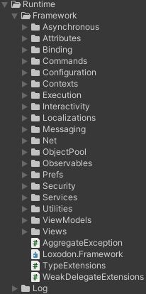
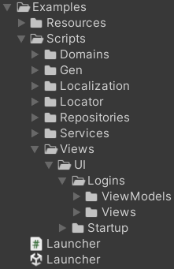
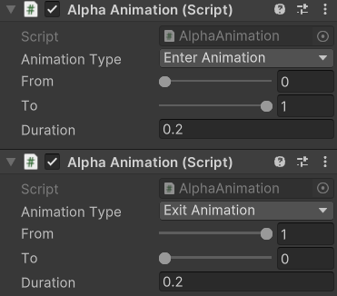
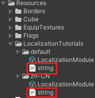
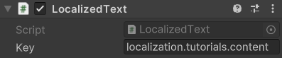
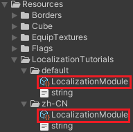
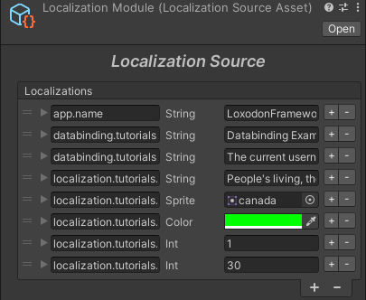

LoxodonFramework是一套
阅读LoxodonFramework源码后，可以直观地感受到它的特性：
所以说该框架是非常值得学习的
首先先看一下其功能方向，也就是它的文件夹：

整体来说这些内容是相辅相成的，主要目标还是为了构建UI框架
在上述文件夹中，我们能发现ViewModels/Views，这也说明了该框架是
业务分析
框架制作者提供了一个例子供我们参考，如下所示：

分层架构
简述一下这里使用到的分层架构：
- 表现层
- View层
- ViewModel层
- 服务层
- Service
- 领域层(Domain Model，可以认为是Model)
- Entity
- Value Object
- Repository
- 基础层
- 框架
- 各类组件(如网络/Log/...)
- 辅助类
可以看到这些内容与框架内容是强关联的,可以说大部分情况下是由框架提供的这些能力
例子简析
在分析源码前，看一个例子会是比较好的选择
Launcher
Launcher.cs是主脚本，也就是唯一入口：
public class Launcher : MonoBehaviour
{
//private static readonly ILog log = LogManager.GetLogger(System.Reflection.MethodBase.GetCurrentMethod().DeclaringType);
private ApplicationContext context;
ISubscription<WindowStateEventArgs> subscription;
void Awake()
{
GlobalWindowManagerBase windowManager = FindObjectOfType<GlobalWindowManagerBase>();
if (windowManager == null)
throw new NotFoundException("Not found the GlobalWindowManager.");
context = Context.GetApplicationContext();
IServiceContainer container = context.GetContainer();
/* Initialize the data binding service */
BindingServiceBundle bundle = new BindingServiceBundle(context.GetContainer());
bundle.Start();
/* Initialize the ui view locator and register UIViewLocator */
container.Register<IUIViewLocator>(new ResourcesViewLocator());
/* Initialize the localization service */
//CultureInfo cultureInfo = Locale.GetCultureInfoByLanguage (SystemLanguage.English);
CultureInfo cultureInfo = Locale.GetCultureInfo();
var localization = Localization.Current;
localization.CultureInfo = cultureInfo;
localization.AddDataProvider(new ResourcesDataProvider("LocalizationExamples", new XmlDocumentParser()));
/* register Localization */
container.Register<Localization>(localization);
/* register AccountRepository */
IAccountRepository accountRepository = new AccountRepository();
container.Register<IAccountService>(new AccountService(accountRepository));
/* Enable window state broadcast */
GlobalSetting.enableWindowStateBroadcast = true;
/*
* Use the CanvasGroup.blocksRaycasts instead of the CanvasGroup.interactable
* to control the interactivity of the view
*/
GlobalSetting.useBlocksRaycastsInsteadOfInteractable = true;
/* Subscribe to window state change events */
subscription = Window.Messenger.Subscribe<WindowStateEventArgs>(e =>
{
Debug.LogFormat("The window[{0}] state changed from {1} to {2}", e.Window.Name, e.OldState, e.State);
});
}
IEnumerator Start()
{
/* Create a window container */
WindowContainer winContainer = WindowContainer.Create("MAIN");
yield return null;
IUIViewLocator locator = context.GetService<IUIViewLocator>();
StartupWindow window = locator.LoadWindow<StartupWindow>(winContainer, "UI/Startup/Startup");
window.Create();
ITransition transition = window.Show().OnStateChanged((w, state) =>
{
//log.DebugFormat("Window:{0} State{1}",w.Name,state);
});
yield return transition.WaitForDone();
}
}
先看Awake()，都是一些初始化操作
可以看到出现最多的就是container.Register()操作，即
- UIViewLocator
- Localization
- AccountRepository
除此以外还有：
- Binding初始化
- GlobalSettings设置
- Messenger订阅
创建窗口流程在Start()中，流程也比较简单，核心当然是window.Create()
View/ViewModel
View和ViewModel是相辅相成的两者，其中：
- View是视图，主要是获取Unity中的控件进行一些操作
- ViewModel是View与Model的中间者，用于沟通两者
先看一下两者的声明：public class LoginWindow : Windowpublic class LoginViewModel : ViewModelBase
观察View脚本LoginWindow.cs，可以说干了两件事：
- 获取Unity组件(通过public，也就是序列化)
- 在
OnCreate()中进行绑定：
protected override void OnCreate(IBundle bundle)
{
this.toastAction = new ToastInteractionAction(this);
BindingSet<LoginWindow, LoginViewModel> bindingSet = this.CreateBindingSet<LoginWindow, LoginViewModel>();
bindingSet.Bind().For(v => v.OnInteractionFinished).To(vm => vm.InteractionFinished);
//bindingSet.Bind().For(v => v.OnToastShow).To(vm => vm.ToastRequest);
bindingSet.Bind().For(v => v.toastAction).To(vm => vm.ToastRequest);
bindingSet.Bind(this.username).For(v => v.text, v => v.onEndEdit).To(vm => vm.Username).TwoWay();
bindingSet.Bind(this.usernameErrorPrompt).For(v => v.text).To(vm => vm.Errors["username"]).OneWay();
bindingSet.Bind(this.password).For(v => v.text, v => v.onEndEdit).To(vm => vm.Password).TwoWay();
bindingSet.Bind(this.passwordErrorPrompt).For(v => v.text).To(vm => vm.Errors["password"]).OneWay();
bindingSet.Bind(this.confirmButton).For(v => v.onClick).To(vm => vm.LoginCommand);
bindingSet.Bind(this.cancelButton).For(v => v.onClick).To(vm => vm.CancelCommand);
bindingSet.Build();
}
而ViewModel脚本LoginViewModel.cs当然会与其配对：
public LoginViewModel(IAccountService accountService, Localization localization, Preferences globalPreferences)
{
// ...
this.loginCommand = new SimpleCommand(this.Login);
this.cancelCommand = new SimpleCommand(() =>
{
this.interactionFinished.Raise();/* Request to close the login window */
});
}
public string Username
{
get { return this.username; }
set
{
if (this.Set(ref this.username, value))
{
this.ValidateUsername();
}
}
}
// PassWord同上
View与ViewModel本质上内容并不多，做的事情就是绑定，比如说：bindingSet.Bind(this.username).For(v => v.text, v => v.onEndEdit).To(vm => vm.Username).TwoWay();
这就是
其它
其它内容都是附属于上述内容的，那么来看一下
Domains
Domains前面提到过，是领域层，简单理解
在这里的话就是Account.cs，一个实体：
public class Account : ObservableObject
{
private string username;
private string password;
private DateTime created;
public string Username {
get{ return this.username; }
set{ this.Set(ref this.username, value); }
}
public string Password {
get{ return this.password; }
set{ this.Set(ref this.password, value); }
}
public DateTime Created {
get{ return this.created; }
set{ this.Set(ref this.created, value); }
}
}
由于它具有和ViewModelBase一样的基类ObservableObject，所以如Username属性是非常相似的，但Account从功能上还是不太一样的：
它牵扯到两个类：AccountRepository/AccountService
AccountRepository是
这是Get()/Save()等函数(一个类即可完成所有)，仓储将函数剥离出来，使用起来必然是更有秩序的
- 使用字典
Dictionary<string, Account>完成 - 提供增删查改功能，该类有：
Get()：获取AccountSave()：添加Account(Repository本地存储)
public class AccountRepository : IAccountRepository
{
private Dictionary<string, Account> cache = new Dictionary<string, Account>();
public AccountRepository()
{
Account account = new Account() { Username = "test", Password = "test", Created = DateTime.Now };
cache.Add(account.Username, account);
}
public virtual Task<Account> Get(string username)
{
Account account = null;
this.cache.TryGetValue(username, out account);
return Task.FromResult(account);
}
public virtual async Task<Account> Save(Account account)
{
if (cache.ContainsKey(account.Username))
throw new Exception("The account already exists.");
cache.Add(account.Username, account);
return account;
}
public virtual Task<Account> Update(Account account)
{
throw new NotImplementedException();
}
public virtual Task<bool> Delete(string username)
{
throw new NotImplementedException();
}
}
关键点：
- 仓储中
存有实体集合(通过一些方式读存(数据库/持久化/网络)) - 仓储
提供增删改查 功能
Services
服务本质上就是
AccountService则
Register()：保存AccountUpdate()：未实现Login()：尝试登陆(验证密码是否正确)
注册该服务可执行操作：Account account = await this.accountService.Login(this.username, this.password);
public class AccountService : IAccountService
{
private IAccountRepository repository;
private IMessenger messenger;
public IMessenger Messenger { get { return messenger; } }
public AccountService(IAccountRepository repository)
{
this.repository = repository;
this.messenger = new Messenger();
}
public virtual async Task<Account> Register(Account account)
{
await this.repository.Save(account);
messenger.Publish(new AccountEventArgs(AccountEventType.Register, account));
return account;
}
public virtual async Task<Account> Update(Account account)
{
await this.repository.Update(account);
messenger.Publish(new AccountEventArgs(AccountEventType.Update, account));
return account;
}
public virtual async Task<Account> Login(string username, string password)
{
Account account = await this.GetAccount(username);
if (account == null || !account.Password.Equals(password))
return null;
messenger.Publish(new AccountEventArgs(AccountEventType.Login, account));
return account;
}
public virtual Task<Account> GetAccount(string username)
{
return this.repository.Get(username);
}
}
Locator
Locator即定位器，也就是
简单来说功能就是：
核心点：
StartupWindow window = locator.LoadWindow<StartupWindow>(winContainer, "UI/Startup/Startup");
Provider
Provider即提供者，能够
核心点：
看一下
public interface IDataProvider
{
Task<Dictionary<string, object>> Load(CultureInfo cultureInfo);
}
也就是根据语言信息获取键值对
Locator/Provider按道理来说不可能是服务层，因为即使它的功能是Locator/Provider但命名依旧应该为Service
框架分析
框架本身就是UI框架，可以说所有创建的内容都是为了实现好的UI效果而创建的
前面也提到过，该框架使用的是
简单分类的话可以这么分：
- 框架---M/V/VM
- 绑定
- 其它
前置
在分析代码前，先介绍一下在后续会出现的一些比较特殊的内容
宏
在代码中常常会出现如下代码：
#if NETFX_CORE
// ...
#else
// ...
#endif
在Unity文档中有所介绍：
UNITY_WSA：用于通用 Windows 平台的 #define 指令。此外，根据 .NET Core 和使用 .NET 脚本后端来编译 C# 文件时会定义 NETFX_CORE。
设计模式
设计模式当然是用来构建好代码的关键，该框架使用了很多设计模式
工厂模式在该框架中极大量的出现，随便看一处：
public static Preferences GetPreferences(string name)
{
Preferences prefs;
if (cache.TryGetValue(name, out prefs))
return prefs;
prefs = GetFactory().Create(name);
cache[name] = prefs;
return prefs;
}
以上就是一种
好处：
Preferences prefs;
if (XXX) {
prefs = new PlayerPrefsPreferences(...);
} else {
prefs = new BinaryFilePreferences(...);
}
这是在业务类实现的代码，即使只有一处我们也需要找到该处才能新增
而有工厂类的话逻辑是固定的：
Preferences.Register(new FilePreferencesFactory());
// 后续直接调用Preferences封装代码即可
var prefs = Preferences.GetPreferences(...);
简单来说：
其它
无论是框架还是绑定，都将用到许多组件辅助类之类的内容，这里先都分析一下
内容比较多，可以在用到后再进行查阅
简单来说，可以分为以下几种：
- 辅助类，即Utility
- 功能类，与框架无强关联
- Log
- ObjectPool
- 框架功能类，与框架具有较强关联
- Commands
- Preferences
- Configuration
- Asynchronous
- Observables
- Interactivity
- Commands
- Messaging
- Execution
- 框架底层类，与框架具有强关联
- Contexts
- Services
Log
Debug.Log()可以说是我们在Unity中最常用的一个API了，功能就是
项目内用法：private static readonly ILog log = LogManager.GetLogger(typeof(XXX));
核心类：
- LogManager
- DefaultLogFactory
Manager显然是管理类，功能很简单：
GetLogger()：获取ILogRegistry()：更改Factory
GetLogger()是其关键：
private static readonly DefaultLogFactory _defaultFactory = new DefaultLogFactory();
private static ILogFactory _factory;
public static ILog GetLogger(Type type)
{
if (_factory != null)
return _factory.GetLogger(type);
return _defaultFactory.GetLogger(type);
}
显然Manager仅为组织者，具体还是需要看Factory
默认提供的工厂为DefaultLogFactory，当然GetLogger()是其关键：
public ILog GetLogger(Type type)
{
ILog log;
if (repositories.TryGetValue(type.FullName, out log))
return log;
log = new LogImpl(type.Name, this); // 创建log
repositories[type.FullName] = log;
return log;
}
可以得知：
LogImpl
Debug()：原LogInfo()：原LogWarn()：原LogWarningError()：原LogErrorFatal()：原LogError- 上述5种函数的Format版本(如
DebugFormat())
Debug()与Info()的区别Debug.Log()但它们的level是不一样的：UnityEngine.Debug.Log(Format(message, "DEBUG"));UnityEngine.Debug.Log(Format(message, "INFO"));Error()与Fatal()同理
下面就用Debug()展示一下：
protected virtual string Format(object message, string level)
{
return string.Format("{0:yyyy-MM-dd HH:mm:ss.fff} [{1}] {2} - {3}", System.DateTime.Now, level, name, message);
}
public virtual void Debug(object message)
{
if (this._factory.InUnity)
UnityEngine.Debug.Log(Format(message, "DEBUG"));
#if !NETFX_CORE
else
Console.WriteLine(Format(message, "DEBUG"));
#endif
}
public virtual void Debug(object message, Exception exception)
{
Debug(string.Format("{0} Exception:{1}", message, exception));
}
可以看到就是
level提供了一些等级控制开关，如IsDebugEnabled()，这里需要注意的是是否开启取决于对工厂Level的设置，有：
protected bool IsEnabled(Level level)
{
return level >= this._factory.Level;
}
public enum Level
{
ALL = 0,
DEBUG,
INFO,
WARN,
ERROR,
FATAL,
OFF
}
可以发现这样就处于一种包含的层级关系，就像默认的Level.ALL就会记录所有level，而Level.WARN就只会记录比本身以及比Level.WARN更严重的错误(ERROR/FATAL)
可以想到：
ObjectPool
一共有2种形态：
- ObjectPool
- MixedObjectPool
先看单纯的
其声明为：public class ObjectPool<T> : IObjectPool<T> where T : class
接口内容不多，核心就是：Allocate()/Free()，这也正是对象池该做的事情
该类的构造函数表明了它的基：
public ObjectPool(IObjectFactory<T> factory, int initialSize, int maxSize)
{
this.factory = factory;
this.initialSize = initialSize;
this.maxSize = maxSize;
this.entries = new Entry[maxSize];
if (maxSize < initialSize)
throw new ArgumentException("the maxSize must be greater than or equal to the initialSize");
for (int i = 0; i < initialSize; i++)
{
this.entries[i].value = factory.Create(this);
}
}
一共有3个信息：初始容量/最大容量/创建工厂
显然工厂是最重要的：
对于ObjectPool，工厂只提供了一种，为
public abstract class UnityGameObjectFactoryBase : IObjectFactory<GameObject>
{
public virtual GameObject Create(IObjectPool<GameObject> pool)
{
GameObject target = this.Create();
PooledUnityObject pooledObj = target.AddComponent<PooledUnityObject>();
pooledObj.pool = pool;
return target;
}
protected abstract GameObject Create();
public abstract void Reset(GameObject obj);
public virtual void Destroy(GameObject obj)
{
Object.Destroy(obj);
}
public virtual bool Validate(GameObject obj)
{
return true;
}
class PooledUnityObject : MonoBehaviour, IPooledObject
{
internal IObjectPool<GameObject> pool;
public void Free()
{
if (pool != null)
pool.Free(this.gameObject);
}
}
}
可以看到没什么特殊的，就是
再来看一下Mixed版本：
对于Mixed版本，可以发现基础有所变化：
public MixedObjectPool(IMixedObjectFactory<T> factory, int defaultMaxSizePerType)
{
this.factory = factory;
this.defaultMaxSizePerType = defaultMaxSizePerType;
if (defaultMaxSizePerType <= 0)
throw new ArgumentException("the maxSize must be greater than 0");
this.entries = new ConcurrentDictionary<string, List<T>>();
this.typeSize = new ConcurrentDictionary<string, int>();
}
可以发现entries变为了一个字典，而且多了一个typeSize字典
最起码我们肯定能知道：
同样的，创建还是通过工厂完成，即
public virtual GameObject Create(IMixedObjectPool<GameObject> pool, string typeName)
{
GameObject target = this.Create(typeName);
PooledUnityObject pooledObj = target.gameObject.AddComponent<PooledUnityObject>();
pooledObj.pool = pool;
pooledObj.target = target;
pooledObj.typeName = typeName;
return target;
}
整体是完全一致的，只是多了一个typeName
拿一个
public class CubeMixedObjectFactory : UnityMixedGameObjectFactoryBase
{
// ...
protected override GameObject Create(string typeName)
{
Debug.LogFormat("Create a cube.");
GameObject go = GameObject.Instantiate(this.template, parent);
go.GetComponent<MeshRenderer>().material.color = GetColor(typeName);
return go;
}
protected Color GetColor(string typeName)
{
if (typeName.Equals("red"))
return Color.red;
if (typeName.Equals("green"))
return Color.green;
if (typeName.Equals("blue"))
return Color.blue;
throw new NotSupportedException("Unsupported type:" + typeName);
}
// ...
}
这些代码足以看出：
所以：
Commands
严格来说，Commands是一种
对于这些框架来说，命令模式最大的好处应该是
所有类型的Command都基于CommandBase，声明为：public abstract class CommandBase : ICommand
看一下接口：
public interface ICommand
{
event EventHandler CanExecuteChanged;
bool CanExecute (object parameter);
void Execute (object parameter);
}
由此就能看出区别：Execute()，在CanExecute发生改变时会执行事件
SimpleCommand是几种Command中最简单的，先看构造：
public SimpleCommand(Action execute, bool keepStrongRef = false)
{
if (execute == null)
throw new ArgumentNullException("execute");
this.execute = keepStrongRef ? execute : execute.AsWeak();
}
这里有一个特殊机制：
之所以这样是因为：
其Execute()执行流程如下：
public override void Execute(object parameter)
{
if (this.CanExecute(parameter) && this.execute != null)
this.execute();
}
public override bool CanExecute(object parameter)
{
return this.Enabled;
}
public bool Enabled
{
get { return this.enabled; }
set
{
if (this.enabled == value)
return;
this.enabled = value;
this.RaiseCanExecuteChanged();
}
}
显然：
而对于SimpleCommand来说，不存在Enable属性变更导致的事件触发
Relay即转发，从名字上不太好理解，但我们看一下构造函数就清楚了：
public RelayCommand(Action execute, Func<bool> canExecute, bool keepStrongRef = false)
{
if (execute == null)
throw new ArgumentNullException("execute");
this.execute = keepStrongRef ? execute : execute.AsWeak();
if (canExecute != null)
this.canExecute = keepStrongRef ? canExecute : canExecute.AsWeak();
}
显然，
CompositeCommand是一个ICommand的管理类，核心就是：private readonly List<ICommand> commands = new List<ICommand>();
对于多个ICommand，执行顺序/是否执行这里都会规定
存储相关
Preferences与Configuration两者都是有关存储的内容
当然它们有着不同的侧重点：
- Preferences：项目相关
- Configuration：更多的是一种外部设置，不可保存
Preferences
Preferences是ApplicationContext的重要组成部分，有：
public virtual Preferences GetGlobalPreferences()
{
// 本质还是Preferences.GetPreferences()
return Preferences.GetGlobalPreferences();
}
public virtual Preferences GetUserPreferences(string name)
{
return Preferences.GetPreferences(name);
}
那么先来看一下
创建
对于Preferences，创建是通过工厂完成的，即prefs = GetFactory().Create(name)
具体选择哪个工厂当然取决于GetFactory()，有2个选项：_factory/_defaultFactory_defaultFactory是一个PlayerPrefsPreferencesFactory
而_factory是通过Register()注册存放的(只有1个)获取
获取其实和创建是合二为一的，与大部分类相同，这里同样使用的是工厂模式，方法如下：
public static Preferences GetPreferences(string name) { Preferences prefs; if (cache.TryGetValue(name, out prefs)) return prefs; prefs = GetFactory().Create(name); cache[name] = prefs; return prefs; } static Preferences() { _defaultFactory = new PlayerPrefsPreferencesFactory(); } protected static IFactory GetFactory() { if (_factory != null) return _factory; return _defaultFactory; }显然，
PlayerPrefsPreferencesFactory 是创建的关键Get/Set
可以说Preferences就是用来进行该操作的，即存储信息获取信息
在类中可以看到极大量的操作，但核心都指向了GetObject()/SetObject()
但其实是abstract函数，需子类实现其它操作
除此以外还有一些abstract函数，为：Save()/Delete()/Load()/Remove()
用法如下：var globalPreferences = context.GetGlobalPreferences();this.username = globalPreferences.GetString(LAST_USERNAME_KEY, "");
当然，既然
- PlayerPrefsPreferencesFactory：生产PlayerPrefsPreferences
- BinaryFilePreferencesFactory：生产BinaryFilePreferences
两工厂声明如下：public class PlayerPrefsPreferencesFactory : AbstractFactorypublic class BinaryFilePreferencesFactory : AbstractFactory
作为AbstractFactory，其核心为：
Create()：创建PreferencesIEncryptor encryptor：加密功能，默认为DefaultSerializer ISerializer serializer：序列化功能，默认为DefaultEncryptor
public AbstractFactory(ISerializer serializer, IEncryptor encryptor)
{
#if UNITY_IOS
Environment.SetEnvironmentVariable("MONO_REFLECTION_SERIALIZER", "yes");
#endif
this.serializer = serializer;
this.encryptor = encryptor;
// 当然，作者提供了默认的工具
if (this.serializer == null)
this.serializer = new DefaultSerializer();
if (this.encryptor == null)
this.encryptor = new DefaultEncryptor();
}
作为存储数据，获取流程必然是
加载即Load()，有：
public PlayerPrefsPreferences(string name, ISerializer serializer, IEncryptor encryptor) : base(name)
{
this.serializer = serializer;
this.encryptor = encryptor;
this.Load();
}
protected override void Load()
{
LoadKeys();
}
protected virtual void LoadKeys()
{
if (!PlayerPrefs.HasKey(Key(KEYS)))
return;
string value = PlayerPrefs.GetString(Key(KEYS));
if (string.IsNullOrEmpty(value))
return;
string[] keyValues = value.Split(new string[] { "," }, StringSplitOptions.RemoveEmptyEntries);
foreach (string key in keyValues)
{
if (string.IsNullOrEmpty(key))
continue;
this.keys.Add(key);
}
}
Key(KEY)是什么
protected static readonly string KEYS = "_KEYS_";
protected string Key(string key)
{
// Name为构造函数传入，默认为GLOBAL_NAME，即"_GLOBAL_"
StringBuilder buf = new StringBuilder(this.Name);
buf.Append(".").Append(key);
return buf.ToString();
}
所以Load()所做的就是：keys)
存取是通过SetObject()/GetObject()完成的：
public override void SetObject(string key, object value)
{
// 序列化为string
string str = value == null ? "" : serializer.Serialize(value);
// 加密
if (this.encryptor != null)
{
// 加密方式：转strng明文(二进制)，加密，转string
byte[] data = Encoding.UTF8.GetBytes(str);
data = this.encryptor.Encode(data);
str = Convert.ToBase64String(data);
}
PlayerPrefs.SetString(Key(key), str);
if (!this.keys.Contains(key))
{
this.keys.Add(key);
this.SaveKeys();
}
}
可以看到处理好数据后，本质上其实就是在PlayerPrefs.SetString()看似已经保存完毕，但这
我们可能保存了许多键值对，我们当然可以手动取出某一个，但到底有哪些我们其实是不知道的，假设我们需要执行RemoveAll()来删除所有已有数据，这是无法做到的SaveKeys()就是关键的一步：
protected virtual void SaveKeys()
{
if (this.keys == null || this.keys.Count <= 0)
{
PlayerPrefs.DeleteKey(Key(KEYS));
return;
}
string[] values = keys.ToArray(); // 取出keys
// 拼接keys
StringBuilder buf = new StringBuilder();
for (int i = 0; i < values.Length; i++)
{
if (string.IsNullOrEmpty(values[i]))
continue;
buf.Append(values[i]);
if (i < values.Length - 1)
buf.Append(",");
}
PlayerPrefs.SetString(Key(KEYS), buf.ToString());
}
可以看到SaveKeys()这是在将所有的key用另一个key保存了Pref名._KEYS_
globalPreferences.SetString("LAST_USERNAME", "A")globalPreferences.SetString("FIRST_USERNAME", "B")
对于GlobalPreferences来说，其Name为_GLOBAL_
对于第一句：
此时key为"_GLOBAL_.LAST_USERNAME"，value为"A"的加密string形式
同时SaveKeys()也会存储另一份合集形式，此时key为_GLOBAL_._KEYS_，value为"LAST_USERNAME"
对于第二句：
此时key为"_GLOBAL_.FIRST_USERNAME"，value为"B"的加密string形式
同时SaveKeys()会进行扩展，此时key为_GLOBAL_._KEYS_，value为"LAST_USERNAME,FIRST_USERNAME"
我们能更清晰地了解到：PlayerPrefs.SetString()是存储，而SaveKeys()是更高层面的存储，也就是存储了有哪些key
所以我们就能实现这种清除手段：
public override void RemoveAll()
{
foreach (string key in keys)
{
PlayerPrefs.DeleteKey(Key(key));
}
PlayerPrefs.DeleteKey(Key(KEYS));
this.keys.Clear();
}
BinaryFilePreferences是同理的，用的是BinaryFile，也就是
Configuration
Configuration同样是存储设置，但是是不同的
public class ConfigurationExample : MonoBehaviour
{
private void Start()
{
IConfiguration conf = CreateConfiguration();
Version appVersion = conf.GetVersion("application.app.version");
Version dataVersion = conf.GetVersion("application.data.version");
Debug.LogFormat("application.app.version:{0}", appVersion);
Debug.LogFormat("application.data.version:{0}", dataVersion);
string groupName = conf.GetString("application.config-group");
IConfiguration currentGroupConf = conf.Subset("application." + groupName);
string upgradeUrl = currentGroupConf.GetString("upgrade.url");
string username = currentGroupConf.GetString("username");
string password = currentGroupConf.GetString("password");
string[] gatewayArray = currentGroupConf.GetArray<string>("gateway");
Debug.LogFormat("upgrade.url:{0}", upgradeUrl);
Debug.LogFormat("username:{0}", username);
Debug.LogFormat("password:{0}", password);
int i = 1;
foreach (string gateway in gatewayArray)
{
Debug.LogFormat("gateway {0}:{1}", i++, gateway);
}
}
private IConfiguration CreateConfiguration()
{
List<IConfiguration> list = new List<IConfiguration>();
//Load default configuration file
TextAsset text = Resources.Load<TextAsset>("application.properties");
list.Add(new PropertiesConfiguration(text.text));
//Load configuration files based on platform information. Configuration files loaded later
//have a higher priority than configuration files loaded first.
text = Resources.Load<TextAsset>(string.Format("application.{0}.properties", Application.platform.ToString().ToLower()));
if (text != null)
list.Add(new PropertiesConfiguration(text.text));
if (list.Count == 1)
return list[0];
return new CompositeConfiguration(list);
}
}
可以发现同样是通过GetString()之类的函数完成获取的，但是整体有很多的不同
继承链如下所示：ConfigurationBase : IConfiguration
派生出：
- MemoryConfiguration：内存流读取(
Dictionary<string, object>字典) - PropertiesConfiguration：自定义属性读取
- SubsetConfiguration：子集Configuration
- CompositeConfiguration：组合Configuration
很明显：
四种Configuration的基，简单分析一下核心内容：
- 获取
GetProperty()：核心 GetString()GetXXX()- ...
- 其它
Subset()
- 抽象
GetKeys()ContainsKey()GetProperty()(子部分)AddProperty()RemoveProperty()SetProperty()Clear()
显然：
对于这些实现的内容，我们可能会比较好奇的是Subset()，这显然与SubsetConfiguration有关
除此之外GetProperty()是比较重要的：
protected virtual T GetProperty<T>(string key, T defaultValue)
{
object value = GetProperty(key); // 这里就是抽象的子部分
if (value == null)
return defaultValue;
return (T)ConvertTo(typeof(T), value);
}
简单来说就是用派生类的实现获取value后转换为相应类型即可
转换流程也很简单：
protected virtual object ConvertTo(Type type, object value)
{
try
{
for (int i = 0; i < converters.Count; i++)
{
var converter = converters[i];
if (!converter.Support(type))
continue;
return converter.Convert(type, value);
}
}
// 异常处理
}
其中转换器默认添加了一种
接下来当然是先从基本原生实现开始
观察Property操作，以MemoryConfiguration为例：
private readonly Dictionary<string, object> dict = new Dictionary<string, object>();
public MemoryConfiguration(Dictionary<string, object> dict):base()
{
if (dict != null && dict.Count > 0)
{
foreach (var kv in dict)
{
dict.Add(kv.Key, kv.Value);
}
}
}
public override object GetProperty(string key)
{
object value = null;
dict.TryGetValue(key, out value);
return value;
}
public override void AddProperty(string key, object value)
{
if (dict.ContainsKey(key))
throw new AlreadyExistsException(key);
dict.Add(key, value);
}
public override void SetProperty(string key, object value)
{
dict[key] = value;
}
public override void RemoveProperty(string key)
{
dict.Remove(key);
}
我们可以得知：
而
public MemoryConfiguration(Dictionary<string, object> dict):base()
{
if (dict != null && dict.Count > 0)
{
foreach (var kv in dict)
{
dict.Add(kv.Key, kv.Value);
}
}
}
public PropertiesConfiguration(string text):base()
{
this.Load(text);
}
protected void Load(string text)
{
StringReader reader = new StringReader(text);
string line = null;
while (null != (line = reader.ReadLine()))
{
line = line.Trim();
if (string.IsNullOrEmpty(line))
continue;
if (Regex.IsMatch(line, @"^((#)|(//))"))
continue;
int index = line.IndexOf("=");
if (index <= 0 || (index + 1) >= line.Length)
throw new FormatException(string.Format("This line is not formatted correctly.line:{0}", line));
string key = line.Substring(0, index).Trim();
string value = line.Substring(index + 1).Trim();
if (string.IsNullOrEmpty(key))
throw new FormatException(string.Format("The key is null or empty.line:{0}", line));
if (dict.ContainsKey(key))
throw new AlreadyExistsException(string.Format("This key already exists.line:{0}", line));
dict.Add(key, value);
}
}
所以：
- MemoryConfiguration是通过一个来自程序的字典完成的，所以可能来自json等序列化文件
- PropertiesConfiguration是通过文本完成的，所以可能来自某txt文本
总的来说，MemoryConfiguration更像是一种基础形式，而PropertiesConfiguration是一种自定义形式，因为文件的读取方式完全是自定义的：
- MemoryConfiguration：
基础的一一配对 - PropertiesConfiguration：
基于行的配置
如：server.host = 192.168.1.1会被存入为["server.host"] = "192.168.1.1"
以上是基础的两个Configuration，接下来看一下复合型的：
从构造函数我们能得知一些信息：
public SubsetConfiguration(ConfigurationBase parent, string prefix)
{
this.parent = parent;
this.prefix = prefix;
}
parent与其名中的SubSet子集对应：
这是一种
在继续分析前，我们需要看一下ConfigurationBase.Subset()：
public virtual IConfiguration Subset(string prefix)
{
if (string.IsNullOrEmpty(prefix))
throw new ArgumentException("the prefix is null or empty", "prefix");
return new SubsetConfiguration(this, prefix);
}
这意味着：
回到该类，
其中有1个关键函数：
protected string GetParentKey(string key)
{
if ("".Equals(key) || key == null)
throw new ArgumentNullException(key);
return prefix + KEY_DELIMITER + key; // 补充前缀
}
再来看override的Subset()：
public override IConfiguration Subset(string prefix)
{
return parent.Subset(GetParentKey(prefix));
}
var baseConfig = new PropertiesConfiguration();
baseConfig.SetProperty("app.database.mysql.host", "localhost");
baseConfig.SetProperty("app.database.mysql.port", "3306");
IConfiguration appConfig = baseConfig.Subset("app");
appConig.GetString("database.mysql.host");
IConfiguration dbConfig = appConfig.Subset("database");
dbConfig.GetString("mysql.host");
对于dbConfig，其prefix为"app.database"，而且它是通过baseConfig.Subset("app.database")创建的
可以说：
对于其它函数，也都是通过parent执行的：GetProperty()：return parent.GetProperty(GetParentKey(key));
Subset意味着子集，而Composite意味着组合，即
其构造函数说明了一切：
public CompositeConfiguration(List<IConfiguration> configurations)
{
this.memoryConfiguration = new MemoryConfiguration();
this.configurations.Add(memoryConfiguration);
if (configurations != null && configurations.Count > 0)
{
for (int i = 0; i < configurations.Count; i++)
{
var config = configurations[i];
if (config == null)
continue;
AddConfiguration(config);
}
}
}
public void AddConfiguration(IConfiguration configuration)
{
if (!configurations.Contains(configuration))
{
configurations.Insert(1, configuration);
}
}
可以说这是一种具有保底机制的Configuration：
也就是：
AddProperty()/SetProperty()/RemoveProperty()针对保底memoryConfiguration操作GetProperty()按序查询获取
触发相关
Observables/Interactivity/Messaging三者都是有关触发的内容
当然它们有着不同的侧重点：
- Observables：观察者模式
- Interactivity：交互请求模式
- Messaging：发布订阅模式
Observables
从名字上我们就可以得知这是有关
有4种实现：
- ObservableObject
- ObservableList
- ObservableDictionary
- ObservableProperty
很明显，就是针对4种内容：Object/List/Dictionary/Property
其中最好理解的肯定是List与Dictionary，因为它们必然是
其声明如下所示：[Serializable] public class ObservableList<T> : IList<T>, IList, INotifyCollectionChanged, INotifyPropertyChanged[Serializable] public class ObservableDictionary<TKey, TValue> : IDictionary<TKey, TValue>, IDictionary, INotifyCollectionChanged, INotifyPropertyChanged
IList/IDictionary就是自定义数据结构的基
而
接口实现本身很简单：
public interface INotifyPropertyChanged
{
event PropertyChangedEventHandler PropertyChanged;
}
public delegate void PropertyChangedEventHandler(object sender, PropertyChangedEventArgs e);
public class PropertyChangedEventArgs : EventArgs
{
public PropertyChangedEventArgs(string propertyName);
public virtual string PropertyName { get; }
}
在某种操作下，会触发该事件：
// ObservableList
private static readonly PropertyChangedEventArgs CountEventArgs = new PropertyChangedEventArgs("Count");
private static readonly PropertyChangedEventArgs IndexerEventArgs = new PropertyChangedEventArgs("Item[]");
public event PropertyChangedEventHandler PropertyChanged
{
add { lock (propertyChangedLock) { this.propertyChanged += value; } }
remove { lock (propertyChangedLock) { this.propertyChanged -= value; } }
}
protected virtual void OnPropertyChanged(PropertyChangedEventArgs e)
{
if (this.propertyChanged != null)
{
this.propertyChanged(this, e);
}
}
// 例子：Add，在对应情况(即InsertItem)都会触发
public void Add(T item)
{
if (IsReadOnly)
throw new NotSupportedException("ReadOnlyCollection");
int index = items.Count;
InsertItem(index, item);
}
protected virtual void InsertItem(int index, T item)
{
CheckReentrancy();
items.Insert(index, item);
OnPropertyChanged(CountEventArgs);
OnPropertyChanged(IndexerEventArgs);
OnCollectionChanged(NotifyCollectionChangedAction.Add, item, index);
}
那么重中之重其实是PropertyChanged事件的添加，但这属于是业务层面的内容了
但是有一点需要注意：
#if NET_2_0 || NET_2_0_SUBSET || (UNITY_EDITOR && UNITY_METRO && !(NET_STANDARD_2_0 || NET_4_6))
namespace System.Collections.Specialized
{
public delegate void NotifyCollectionChangedEventHandler(object sender, NotifyCollectionChangedEventArgs e);
public interface INotifyCollectionChanged
{
event NotifyCollectionChangedEventHandler CollectionChanged;
}
}
#endif
即
ObservableProperty本质上和ObservablesList/ObservableDictionary可以归为一类，但是有一点明显不同：
其声明与接口如下：
[Serializable]
public class ObservableProperty : ObservablePropertyBase<object>, IObservableProperty {...}
public interface IObservableProperty
{
event EventHandler ValueChanged;
Type Type { get; }
object Value { get; set; }
}
由该接口我们可以得知：
实际上触发原理还是完全一致的：
[Serializable]
public abstract class ObservablePropertyBase<T>
{
private EventHandler valueChanged;
public event EventHandler ValueChanged
{
add { lock (_lock) { this.valueChanged += value; } }
remove { lock (_lock) { this.valueChanged -= value; } }
}
protected void RaiseValueChanged()
{
this.valueChanged?.Invoke(this, EventArgs.Empty);
}
// ...
}
[Serializable]
public class ObservableProperty : ObservablePropertyBase<object>, IObservableProperty
{
public virtual object Value
{
get { return this._value; }
set
{
if (this.Equals(this._value, value))
return;
this._value = value;
this.RaiseValueChanged();
}
}
// ...
}
ObservableObject是4种中最特殊的一种，也是最关键的一种，原因就在于：
先看一下其声明：[Serializable] public abstract class ObservableObject : INotifyPropertyChanged
最明显的一点区别就是：
正因该区别实现也有所不同：
protected virtual void RaisePropertyChanged(PropertyChangedEventArgs eventArgs)
{
try
{
if (propertyChanged != null)
propertyChanged(this, eventArgs);
}
catch (Exception e)
{
if (log.IsWarnEnabled)
log.WarnFormat("Set property '{0}', raise PropertyChanged failure.Exception:{1}", eventArgs.PropertyName, e);
}
}
protected bool Set<T>(ref T field, T newValue, [CallerMemberName] string propertyName = null)
{
if (EqualityComparer<T>.Default.Equals(field, newValue))
return false;
field = newValue;
RaisePropertyChanged(propertyName);
return true;
}
触发由Set()进行，
public string Username
{
get { return this.username; }
set
{
if (this.Set(ref this.username, value))
{
this.ValidateUsername();
}
}
}
由此我们能更加明白Object的含义：Set()操作
[CallerMemberName]是什么
所以对于上述例子，就相当于是：this.Set(ref this.username, value, "Username")
那么这里的含义就是：username设置为value，然后通过该string转换为PropertyChangedEventArgs后进行propertyChanged回调
Interactivity
Interactivity即互动性，对于该组内容需要先
// InterationExample(View)
protected override void Start()
{
// ...
bindingSet.Bind().For(v => v.OnOpenAlert).To(vm => vm.AlertDialogRequest);
bindingSet.Bind(this.openAlert).For(v => v.onClick).To(vm => vm.OpenAlertDialog);
// ...
}
private void OnOpenAlert(object sender, InteractionEventArgs args)
{
DialogNotification notification = args.Context as DialogNotification;
var callback = args.Callback;
if (notification == null)
return;
AlertDialog.ShowMessage(notification.Message, notification.Title, notification.ConfirmButtonText, null, notification.CancelButtonText, notification.CanceledOnTouchOutside, (result) =>
{
notification.DialogResult = result;
callback?.Invoke();
});
}
// InterationViewModel
public InterationViewModel()
{
this.OpenAlertDialog = new SimpleCommand(() =>
{
this.OpenAlertDialog.Enabled = false;
DialogNotification notification = new DialogNotification("Interation Example", "This is a dialog test.", "Yes", "No", true);
Action<DialogNotification> callback = n =>
{
this.OpenAlertDialog.Enabled = true;
if (n.DialogResult == AlertDialog.BUTTON_POSITIVE)
{
Debug.LogFormat("Click: Yes");
}
else if (n.DialogResult == AlertDialog.BUTTON_NEGATIVE)
{
Debug.LogFormat("Click: No");
}
};
this.AlertDialogRequest.Raise(notification, callback);
});
}
由此我们可以得知：
Interactivity是一系列用于绑定情况(Button)的事件触发机制 - 涉及项有如下几种：
- Request：请求，ViewModel定义
- Action：触发事件(如上述的
OnOpenAlert())，View定义- Notification：通知，即一组信息
- 流程如下：
Button触发Command，Command中request.Raise()触发callback，即Action
Request
Request都继承于接口IInteractionRequest，如下所示：
public interface IInteractionRequest
{
event EventHandler<InteractionEventArgs> Raised;
}
public class InteractionEventArgs : EventArgs
{
private object context;
private Action callback;
public InteractionEventArgs(object context, Action callback)
{
this.context = context;
this.callback = callback;
}
public object Context { get { return this.context; } }
public Action Callback { get { return this.callback; } }
}
说到底还是一个
派生了2种形态：
- InteractionRequest
- AsyncInteractionRequest：异步形态
那么就以基础的
public class InteractionRequest : IInteractionRequest
{
private static readonly InteractionEventArgs emptyEventArgs = new InteractionEventArgs(null, null);
private object sender;
public InteractionRequest() : this(null)
{
}
public InteractionRequest(object sender)
{
this.sender = sender != null ? sender : this;
}
public event EventHandler<InteractionEventArgs> Raised;
public void Raise()
{
this.Raise(null);
}
public void Raise(Action callback)
{
var handler = this.Raised;
if (handler != null)
handler(this.sender, callback == null ? emptyEventArgs : new InteractionEventArgs(null, () => { if (callback != null) callback(); }));
}
}
可以说这就是一个
Action
在上述例子中，Action并没有任何类，而是(object sender, InteractionEventArgs args)形式的函数
- 基于InteractionActionBase
- ToastInteractionAction
- DialogInteractionAction
- LoadingInteractionAction
- 基于AsyncInteractionActionBase
- AsyncDialogInteractionAction
- AsyncViewInteractionAction
- AsyncWindowInteractionAction
要注意的是：
先来看看Base：
public abstract class InteractionActionBase<TNotification> : IInteractionAction
{
public void OnRequest(object sender, InteractionEventArgs args)
{
Action callback = args.Callback;
TNotification notification = (TNotification)args.Context;
this.Action(notification, callback);
}
public abstract void Action(TNotification notification, Action callback);
}
显然使用Action的话OnRequest()即可执行已override的Action()
在此我们了解到其中心主旨即可，
但我们要知道到：
Messaging
Messaging即消息，涉及类不多，核心为public static readonly IMessenger Messenger = new Messenger();
显然Messenger是
其声明为：public class Messenger : IMessenger
接口IMessenger异常简单，仅有2类函数：Subscribe()/Publish()，显然这是
public class Launcher : MonoBehaviour
{
ISubscription<WindowStateEventArgs> subscription;
void Awake()
{
// ...
/* Subscribe to window state change events */
subscription = Window.Messenger.Subscribe<WindowStateEventArgs>(e =>
{
Debug.LogFormat("The window[{0}] state changed from {1} to {2}", e.Window.Name, e.OldState, e.State);
});
}
}
// Window
protected WindowState State
{
get { return this.state; }
set
{
if (this.state.Equals(value))
return;
WindowState old = this.state;
this.state = value;
this.RaiseStateChanged(old, this.state);
}
}
protected void RaiseStateChanged(WindowState oldState, WindowState newState)
{
try
{
WindowStateEventArgs eventArgs = new WindowStateEventArgs(this, oldState, newState);
if (GlobalSetting.enableWindowStateBroadcast && stateBroadcast)
Messenger.Publish(eventArgs);
if (this.stateChanged != null)
this.stateChanged(this, eventArgs);
}
catch (Exception e)
{
if (log.IsWarnEnabled)
log.WarnFormat("{0}", e);
}
}
可以看出这里就是
由此我们也能看出：
先来看订阅Messenger.Subscribe()：
public virtual ISubscription<T> Subscribe<T>(Action<T> action)
{
Type type = typeof(T);
SubjectBase notifier;
if (!notifiers.TryGetValue(type, out notifier))
{
notifier = new Subject<T>();
// 保证线程安全
if (!notifiers.TryAdd(type, notifier))
notifiers.TryGetValue(type, out notifier);
}
return (notifier as Subject<T>).Subscribe(action);
}
可以看到这里的核心操作就是Subscribe()Subscribe()的另一个版本增加了一个名为channel的string，其实就是在外面再包了一层字典
再来看发布Messenger.Publish()：
public virtual void Publish<T>(T message)
{
if (message == null || notifiers.Count <= 0)
return;
Type messageType = message.GetType();
foreach (var kv in notifiers)
{
if (kv.Key.IsAssignableFrom(messageType))
kv.Value.Publish(message);
}
}
很简单，Publish()即可
Subscribe()/Publish()的本质，而Messenger仅仅是一层封装
先来看订阅Subject.Subscribe()：
public ISubscription<T> Subscribe(Action<T> action)
{
return new Subscription(this, action);
}
仅仅是创建一个Subscription
再来看发布Subject.Publish()：
public void Publish(T message)
{
if (subscriptions.Count <= 0)
return;
foreach (var kv in subscriptions)
{
Subscription subscription;
kv.Value.TryGetTarget(out subscription);
if (subscription != null)
subscription.Publish(message);
else
subscriptions.TryRemove(kv.Key, out _);
}
}
可以发现：Messenger.Subscribe()会保存Subscription在内部，最终还是通过Subscription.Publish()完成发布操作
public void Publish(T message)
{
try
{
if (this.context != null)
context.Post(state => action?.Invoke((T)state), message);
else
action?.Invoke(message);
}
catch (Exception e)
{
#if DEBUG
throw;
#else
if (log.IsWarnEnabled)
log.Warn(e);
#endif
}
}
可以发现就是简单的Action调用
可以看到有一种context.Post()形式，context是通过ObserveOn()传入的，就像这种：this.subscriptionInUIsThread = this.messenger.Subscribe<TestMessage>(OnMessageInUIThread).ObserveOn(SynchronizationContext.Current);
也就是说：ObserveOn()可以用来指定执行线程的同步上下文
区别
我们会发现三者的相似程度太高了，整体来说都是一种事件机制，但是写法与用途有着很大的区别
三者其实分别是设计模式的不同体现：
- Observables：观察者模式，用于
数据通知 - Interactivity：观察者模式，用于
沟通V与VM - Messaging：发布订阅模式，用于
解耦通信
发布订阅模式下发布者与订阅者完全不耦合---发布者与订阅者不知道彼此的存在，完全通过中间件通信
关于用法
- 对于Observables：
我们可能创建一个ObservableList并进行回调的添加，在后续使用中会由数据的变动而进行回调 - 对于Interactivity：
在VM中创建Request，在V中创建Action，通过绑定使得V与VM联系起来 - 对于Messaging：
可通过订阅T，发布T的方式进行通讯
发布订阅模式的Messaging与观察者模式的Observables/Interactivity具有较大的区别，正如上述介绍的，Messaging仅需在A处订阅，B处发布即可，无需考虑之间的关系
Observables与Interactivity的区别在于：
Asynchronous
Async我们肯定很熟悉，即异步，但它的全称就是Asynchronous(adj.)
在Unity中我们可能完全用不到异步，因为使用携程即可代替，但是这不意味着异步是没有用的
AsyncResult
对于异步部分，有一个基础核心类，为public class AsyncResult : IAsyncResult, IPromise
从Result一词来看，这是一个
先看两接口：
public interface IAsyncResult
{
object Result { get; }
Exception Exception { get; }
bool IsDone { get; }
bool IsCancelled { get; }
bool Cancel();
ICallbackable Callbackable();
ISynchronizable Synchronized();
object WaitForDone();
}
public interface IPromise
{
object Result { get; }
Exception Exception { get; }
bool IsDone { get; }
bool IsCancelled { get; }
bool IsCancellationRequested { get; }
void SetCancelled();
void SetException(string error);
void SetException(Exception exception);
void SetResult(object result = null);
}
- IAsyncResult接口显然是AsyncResult的基，可以看到最重要的2数据：
- Result：异步完成结果
- IsDone/IsCancelled：状态(完成/取消)
- IPromise接口从名字上指的是承诺，即
承诺完成并给出结果(无论成功还是失败) ，这是JavaScript异步中的一个概念
它们的区别在于：
IAsyncResult核心在于 使用 ：WaitForDone()等待执行完毕，获取ResultIPromise核心在于 设置 ：SetResult()设置Result
但是要注意的一点就是：
回到AsyncResult：
说到底一切都是为了在异步情况下用一个实例存储Result并记录状态，那么Set显然是其中最重要的
函数SetXXX()
Set一共有3种，即SetResult()/SetException()/SetCancelled()
用最常见的SetResult()举例：
public virtual void SetResult(object result = null)
{
lock (_lock)
{
if (this.done)
return;
this.result = result;
this.done = true;
Monitor.PulseAll(_lock); // 唤醒等待线程
}
this.RaiseOnCallback();
}
这里的Monitor.PulseAll(_lock)非常关键：
该函数是有着一对匹配项的：
Monitor.Wait()：等待Monitor.PulseAll()：唤醒
也就是说：Monitor.PulseAll()之前，会有一处Monitor.Wait()用于"卡住"线程
函数WaitForDone()
从名字上来看，这是一个yield return show.WaitForDone();
可以看到是
public virtual object WaitForDone()
{
return Executors.WaitWhile(() => !IsDone);
}
public static object WaitWhile(Func<bool> predicate)
{
if (executor != null && IsMainThread)
return new WaitWhile(predicate);
throw new NotSupportedException("The function must execute on main thread.");
}
本质：UnityEngine.WaitWhile()
这个函数我们可能不熟悉，但是我们一定见过WaitForSeconds类，其实是一样的
除了以上两种函数外，仅剩2种比较特殊的函数了，即Callbackable()/Synchronized()
其用法如下：result.Synchronized().WaitForResult()
public virtual ISynchronizable Synchronized()
{
lock (_lock)
{
return this.synchronizable ?? (this.synchronizable = new Synchronizable(this, this._lock));
}
}
实现类为Synchronizable：internal class Synchronizable : ISynchronizable
其接口如下：
public interface ISynchronizable
{
bool WaitForDone();
object WaitForResult(int millisecondsTimeout = 0);
object WaitForResult(TimeSpan timeout);
}
以WaitForResult()为例：
public object WaitForResult(int millisecondsTimeout = 0)
{
// 已经完成则直接返回结果
if (result.IsDone)
{
if (result.Exception != null)
throw result.Exception;
return result.Result;
}
// 等待结果返回
lock (_lock)
{
if (!result.IsDone)
{
if (millisecondsTimeout > 0)
Monitor.Wait(_lock, millisecondsTimeout);
else
Monitor.Wait(_lock);
}
}
if (!result.IsDone)
throw new TimeoutException();
if (result.Exception != null)
throw result.Exception;
return result.Result; // 返回结果
}
这里就是前面提及到的Monitor.PulseAll()的另一半Monitor.Wait()，
即Monitor.PulseAll()的执行恢复
而WaitForDone()则是仅返回完成情况版，本质上是一样的
其用法如下：result.Callbackable().OnCallback((r) => ...);
public virtual ICallbackable Callbackable()
{
lock (_lock)
{
return this.callbackable ?? (this.callbackable = new Callbackable(this));
}
}
实现类为Callbackable：internal class Callbackable : ICallbackable
其接口如下：
public interface ICallbackable
{
void OnCallback(Action<IAsyncResult> callback);
}
OnCallback()具体实现如下：
public void OnCallback(Action<IAsyncResult> callback)
{
lock (_lock)
{
if (callback == null)
return;
if (this.result.IsDone)
{
try
{
callback(this.result);
}
catch (Exception e)
{
if (log.IsWarnEnabled)
log.WarnFormat("Class[{0}] callback exception.Error:{1}", this.GetType(), e);
}
return;
}
this.callback += callback;
}
}
即
显然AsyncResult.RaiseOnCallback()：
protected virtual void RaiseOnCallback()
{
if (this.callbackable != null)
this.callbackable.RaiseOnCallback();
}
public void RaiseOnCallback()
{
lock (_lock)
{
try
{
if (this.callback == null)
return;
var list = this.callback.GetInvocationList();
this.callback = null;
foreach (Action<IAsyncResult> action in list)
{
try
{
action(this.result);
}
catch (Exception e)
{
if (log.IsWarnEnabled)
log.WarnFormat("Class[{0}] callback exception.Error:{1}", this.GetType(), e);
}
}
}
catch (Exception e) {...}
}
}
由此我们可以得知：
当然，AsyncResult只是最基础的一种异步Result，还有一些派生于它的类：
- ProgressResult
- ImmutableAsyncResult
- ImmutableProgressResult
- CoroutineResult
(来自Loxodon.Framework.Execution) - CoroutineProgressResult
(同上)
Progress即进度，显然是一种
其声明如下：public class ProgressResult<TProgress> : AsyncResult, IProgressResult<TProgress>, IProgressPromise<TProgress>
额外的接口具体如下：
public interface IProgressResult<TProgress> : IAsyncResult
{
TProgress Progress { get; }
new IProgressCallbackable<TProgress> Callbackable(); // new覆盖形式
}
public interface IProgressPromise<TProgress> : IPromise
{
TProgress Progress { get; }
void UpdateProgress(TProgress progress);
}
目的为：当UpdateProgress()时，
public ProgressResult<float, bool> DownloadFileAsync(string url)
{
var result = new ProgressResult<float, bool>();
Task.Run(() => {
try {
for (int i = 0; i <= 100; i++) {
if (result.IsCancellationRequested) break;
// 模拟下载进度
result.UpdateProgress(i / 100f);
Thread.Sleep(50);
}
if (!result.IsCancellationRequested)
{
result.SetResult(true);
}
else
{
result.SetCancelled();
}
}
catch (Exception ex) {
result.SetException(ex);
}
});
return result;
}
// 使用
var download = DownloadFileAsync("file.zip");
download.Callbackable().OnProgressCallback(p => UpdateProgressBar(p));
download.Callbackable().OnCallback((r, ex) => {
if (ex != null) {
ShowMessage($"下载失败: {ex.Message}");
} else if (r.IsCancelled) {
ShowMessage("下载已取消");
} else {
ShowMessage("下载完成!");
}
});
从名字上就可以看出，这是一种Immutable的AsyncResult，Immutable也就是
public class ImmutableAsyncResult : AsyncResult
{
public ImmutableAsyncResult() : base(false)
{
this.SetResult(null);
}
public ImmutableAsyncResult(object result) : base(false)
{
this.SetResult(result);
}
public ImmutableAsyncResult(Exception exception) : base(false)
{
this.SetException(exception);
}
}
SetXXX()的执行，就以SetResult()为例：
public virtual void SetResult(object result = null)
{
lock (_lock)
{
if (this.done) // 构造后一定会进入，即返回
return;
this.result = result;
this.done = true; // 构造时会设置
Monitor.PulseAll(_lock);
}
this.RaiseOnCallback();
}
看过了ProgressResult与ImmutableAsyncResult，该类就很明显了，即
该类严格来说并非基础的AsyncResult，因为它是在Loxodon.Framework.Execution命名空间下的
但是本质上还是
其声明为：public class CoroutineResult : AsyncResult, ICoroutinePromise
先看接口：
public interface ICoroutinePromise : IPromise
{
void AddCoroutine(Coroutine coroutine);
}
也就是说AddCoroutine()功能
其扩展内容很少，具体如下：
public class CoroutineResult : AsyncResult, ICoroutinePromise
{
protected List<Coroutine> coroutines = new List<Coroutine>();
public CoroutineResult() : base(true)
{
}
public override bool Cancel()
{
if (this.IsDone)
return false;
this.cancellationRequested = true;
foreach (Coroutine coroutine in this.coroutines)
{
Executors.StopCoroutine(coroutine);
}
this.SetCancelled();
return true;
}
public void AddCoroutine(Coroutine coroutine)
{
this.coroutines.Add(coroutine);
}
}
具体会在Execution中分析
Task
除了核心的AsyncResult，可以看到许多的Task，如AsyncTask/ProgressTask
但是几乎所有的Task都被标记为[Obsolete]即不再使用
唯一被保留的是
这是一个单独的类，并没有继承什么，简单归纳一下其函数：
- 静态
Delay()---延迟操作Run()---函数执行WhenAll()---等待所有CoroutineTask完成WhenAny()---等待任意CoroutineTask完成
- 实例
ContinueWith()---在完成某CoroutineTask后继续执行
由此，我们可以明显地了解到：
以下是
public class CoroutineTaskExample : MonoBehaviour
{
IEnumerator Start()
{
Debug.LogFormat("Wait for 2 seconds");
yield return CoroutineTask.Delay(2f).WaitForDone();
CoroutineTask task = new CoroutineTask(DoTask())
.ContinueWith(
DoContinueTask(),
CoroutineTaskContinuationOptions.OnCompleted
| CoroutineTaskContinuationOptions.OnFaulted
).ContinueWith(
() => { Debug.Log("The task is completed"); }
);
yield return task.WaitForDone();
Debug.LogFormat("IsDone:{0} IsCompleted:{1} IsFaulted:{2} IsCancelled:{3}",
task.IsDone, task.IsCompleted, task.IsFaulted, task.IsCancelled);
}
/// <summary>
/// Simulate a task.
/// </summary>
/// <returns>The task.</returns>
/// <param name="promise">Promise.</param>
protected IEnumerator DoTask()
{
int n = 10;
for (int i = 0; i < n; i++)
{
Debug.LogFormat("Task:i = {0}", i);
yield return new WaitForSeconds(0.5f);
}
}
protected IEnumerator DoContinueTask()
{
int n = 10;
for (int i = 0; i < n; i++)
{
Debug.LogFormat("ContinueTask:i = {0}", i);
yield return new WaitForSeconds(0.5f);
}
}
}
在其中，有一个比较"隐蔽"的函数：GetAwaiter()
#if NETFX_CORE || NET_STANDARD_2_0 || NET_4_6
public virtual IAwaiter<object> GetAwaiter()
{
return new AsyncResultAwaiter<AsyncResult>(asyncResult);
}
#endif
这其实是一种对await关键字的扩充，所以也就需要进行编译限定了
可能的实现如下：
async void MyMethod()
{
await CoroutineTask.Delay(1000);
Debug.Log("1秒后执行");
await CoroutineTask.Run(() => {
// ...
});
}
其它的task可能不是完全无用，但是可能功能性太弱了
Execution
Execution即执行，代码本身就会执行，那么这里的执行指的就会是特殊形式的执行
Executors
其中的核心类为
浏览代码，会发现内部有大量的静态函数，事实上它们都是
- CoroutineExecutor
- CoroutineScheduledExecutor
- MainLoopExecutor
- ThreadExecutor
- ThreadScheduledExecutor
这里以MainLoopExecutor举例：
public class MainLoopExecutor : AbstractExecutor, IMainLoopExecutor
{
public virtual void RunOnMainThread(Action action, bool waitForExecution = false)
{
Executors.RunOnMainThread(action, waitForExecution);
}
public virtual TResult RunOnMainThread<TResult>(Func<TResult> func)
{
return Executors.RunOnMainThread(func);
}
}
即：
可以发现这些分支类都是
public abstract class AbstractExecutor
{
static AbstractExecutor()
{
Executors.Create();
}
}
显然这是一个初始化操作，其实
// 场景加载前执行
[RuntimeInitializeOnLoadMethod(RuntimeInitializeLoadType.BeforeSceneLoad)]
static void OnRuntimeCreate()
{
//For compatibility with the "Configurable Enter Play Mode" feature
#if UNITY_2019_3_OR_NEWER //&& UNITY_EDITOR
disposed = false;
executor = null;
context = null;
#endif
Create();
}
public static void Create(bool dontDestroy = true, bool useFixedUpdate = false)
{
lock (syncLock)
{
try
{
if (executor != null)
return;
#if NETFX_CORE || !NET_LEGACY
mainThreadId = Environment.CurrentManagedThreadId;
#else
Thread currentThread = Thread.CurrentThread;
if (currentThread.ManagedThreadId > 1 || currentThread.IsThreadPoolThread)
throw new Exception("Initialize the class on the main thread, please!");
mainThread = currentThread;
#endif
executor = CreateMainThreadExecutor(dontDestroy, useFixedUpdate);
context = SynchronizationContext.Current;
}
catch (Exception e)
{
if (log.IsErrorEnabled)
log.ErrorFormat("Start Executors failure.Exception:{0}", e);
}
}
}
可以看到的是当场景加载前一定会执行一次Create()，AbstractExecutor只是起了保护作用Create()中的几个变量都是关键：
- mainThreadId/mainThread：主线程(id)
- executor：一个MainThreadExecutor
- context：主线程上下文
SynchronizationContext.Current的设置，所以此时必然能够获得正在执行的主线程，即UI线程
mainThread同理
CreateMainThreadExecutor()所示：
private static MainThreadExecutor CreateMainThreadExecutor(bool dontDestroy, bool useFixedUpdate)
{
GameObject go = new GameObject("MainThreadExecutor");
var executor = go.AddComponent<MainThreadExecutor>();
go.hideFlags = HideFlags.HideAndDontSave;
if (dontDestroy)
GameObject.DontDestroyOnLoad(go);
executor.useFixedUpdate = useFixedUpdate;
return executor;
}
分支Executor
这是Executors下的一个
简述：
前面也提到过，该Executor有一个特点就是是基于MonoBehaviour的
除此以外，还有一些特征：
具有队列Queue
在类的开头，我们就能找到一些有关队列的私有变量：
private List<object> pendingQueue = new List<object>(); // 即将
private List<object> stopingQueue = new List<object>(); // 停止
private List<object> runningQueue = new List<object>(); // 进行
private List<object> stopingTempQueue = new List<object>(); // 临时停止
显然这里描述的就是
具体如下：
该类提供了2个公开函数供Executors使用，即Execute()/Stop()，一个开始一个结束
简单来说：
Execute()：加入pendingQueueStop()：加入stopingQueue，或移出pendingQueue(对于IEnumerator来说，可能还未开始)
具体的执行由MonoBehaviour的生命周期控制：
void OnApplicationQuit()
{
this.StopAllCoroutines();
Executors.Destroy();
if (this.gameObject != null)
{
Destroy(this.gameObject);
}
}
void Update()
{
if (useFixedUpdate)
return;
if (pendingQueue.Count <= 0 && stopingQueue.Count <= 0)
return;
this.DoStopingQueue();
this.DoPendingQueue();
}
void FixedUpdate()
{
if (!useFixedUpdate)
return;
if (pendingQueue.Count <= 0 && stopingQueue.Count <= 0)
return;
this.DoStopingQueue();
this.DoPendingQueue();
}
显然，Execute()/Stop()后，会由DoStopingQueue()/DoPendingQueue()处理stopingQueue/pendingQueue队列的内容
具体函数如下：
protected void DoStopingQueue()
{
lock (stopingQueue)
{
if (stopingQueue.Count <= 0)
return;
stopingTempQueue.Clear();
stopingTempQueue.AddRange(stopingQueue);
stopingQueue.Clear();
}
for (int i = 0; i < stopingTempQueue.Count; i++)
{
try
{
object task = stopingTempQueue[i];
if (task is IEnumerator)
{
this.StopCoroutine((IEnumerator)task);
continue;
}
if (task is Coroutine)
{
this.StopCoroutine((Coroutine)task);
continue;
}
}
catch (Exception e)
{
if (log.IsWarnEnabled)
log.WarnFormat("Task stop exception! error:{0}", e);
}
}
stopingTempQueue.Clear();
}
protected void DoPendingQueue()
{
lock (pendingQueue)
{
if (pendingQueue.Count <= 0)
return;
runningQueue.Clear();
runningQueue.AddRange(pendingQueue);
pendingQueue.Clear();
}
float startTime = Time.realtimeSinceStartup;
for (int i = 0; i < runningQueue.Count; i++)
{
try
{
object task = runningQueue[i];
if (task is Action)
{
((Action)task)();
continue;
}
if (task is IEnumerator)
{
this.StartCoroutine((IEnumerator)task);
continue;
}
}
catch (Exception e)
{
if (log.IsWarnEnabled)
log.WarnFormat("Task execution exception! error:{0}", e);
}
}
runningQueue.Clear();
float time = Time.realtimeSinceStartup - startTime;
if (time > 0.15f)
log.DebugFormat("The running time of tasks in the main thread executor is too long.these tasks take {0} milliseconds.", (int)(time * 1000));
}
简单来说，会对相应队列内的所有内容(IEnumerator或Coroutine)执行所对应的操作：
DoStopingQueue()：转移至stopingTempQueue，执行StopCoroutine()(MonoBehaviour操作) 停止(仅IEnumerator，Action无需停止) DoPendingQueue()：转移至runningQueue，Action则会直接执行，IEnumerator则会StartCoroutine()
和MainThreadExecutor名字很像，但MainLoopExecutor是属于单独的类的，内容不多：
public class MainLoopExecutor : AbstractExecutor, IMainLoopExecutor
{
public virtual void RunOnMainThread(Action action, bool waitForExecution = false)
{
Executors.RunOnMainThread(action, waitForExecution);
}
public virtual TResult RunOnMainThread<TResult>(Func<TResult> func)
{
return Executors.RunOnMainThread(func);
}
}
从函数名可以得知，这应该是一个
以一般形式为例：
public static void RunOnMainThread(Action action, bool waitForExecution = false)
{
if (disposed)
return;
if (waitForExecution)
{
AsyncResult result = new AsyncResult();
RunOnMainThread(action, result);
result.Synchronized().WaitForResult();
return;
}
if (IsMainThread)
{
action();
return;
}
//executor.Execute(action);
context.Post(DoAction, action);
}
public static void RunOnMainThread(Action action, IPromise promise)
{
try
{
CheckDisposed();
if (IsMainThread)
{
action();
promise.SetResult();
return;
}
context.Post((state) =>
{
try
{
action();
promise.SetResult();
}
catch (Exception e)
{
promise.SetException(e);
}
}, null);
}
catch (Exception e)
{
promise.SetException(e);
}
}
即如下几种情况：
- 等待情况，即
waitForExecution = true
该情况会由WaitForResult()停下，由SetResult()继续(核心就是 Monitor.Wait()/Monitor.PulseAll()两函数)- 在主线程则直接执行
- 不在主线程则Post到主线程执行
- 一般情况，即
waitForExecution = false- 在主线程直接执行
- 不在主线程则Post到主线程执行
泛型形式区别不大，为waitForExecution为true情况的
更核心的是一般形式，泛型形式仅是一种
所以总结来说：
核心的话应该就是context.Post()调回主线程了
从名字上来看，很明显是
该类函数较多，但本质上只有一个函数，即Execute()
以最简单形式为例：
public virtual Asynchronous.IAsyncResult Execute(Action action)
{
AsyncResult result = new AsyncResult(true);
Executors.RunAsyncNoReturn(() =>
{
try
{
if (result.IsCancellationRequested)
{
result.SetCancelled();
return;
}
action();
result.SetResult();
}
catch (Exception e)
{
result.SetException(e);
}
});
return result;
}
可以看到这里与其它Executor有所区别：
但是核心还是调用函数，即Executors.RunAsyncNoReturn()：
public static void RunAsyncNoReturn(Action action)
{
DoRunAsync(action);
}
private static void DoRunAsync(Action action)
{
#if UNITY_WEBGL
throw new NotSupportedException("Multithreading is not supported on the WebGL platform.");
#elif UNITY_EDITOR
ThreadPool.QueueUserWorkItem((state) =>
{
var thread = Thread.CurrentThread;
try
{
lock (threads)
{
threads[thread.ManagedThreadId] = thread;
}
action();
}
finally
{
lock (threads)
{
threads.Remove(thread.ManagedThreadId);
}
}
});
#elif NETFX_CORE || !NET_LEGACY
Task.Factory.StartNew(action);
#else
ThreadPool.QueueUserWorkItem((state) => { action(); });
#endif
}
这里我们主要考虑最后2种情况：
对于现代.NET平台，会使用一种比较现代的方式执行
对于传统.NET平台，会使用传统线程池执行
简单来说：
Coroutine即携程，显然是通过
该类函数较多，但本质上只有2种函数，即：
RunOnCoroutineNoReturn()RunOnCoroutine()
以最简单形式为例： public virtual Asynchronous.IAsyncResult RunOnCoroutine(IEnumerator routine)
// CoroutineExecutor.cs
public virtual Asynchronous.IAsyncResult RunOnCoroutine(IEnumerator routine)
{
return Executors.RunOnCoroutine(routine);
}
// Executors.cs
public static Asynchronous.IAsyncResult RunOnCoroutine(IEnumerator routine)
{
CoroutineResult result = new CoroutineResult();
DoRunOnCoroutine(routine, result);
return result;
}
internal static void DoRunOnCoroutine(IEnumerator routine, ICoroutinePromise promise)
{
if (disposed)
{
promise.SetException(new ObjectDisposedException("Executors"));
return;
}
if (executor == null)
{
promise.SetException(new ArgumentNullException("executor"));
return;
}
if (IsMainThread)
{
Coroutine coroutine = executor.StartCoroutine(WrapEnumerator(routine, promise));
promise.AddCoroutine(coroutine);
return;
}
// MainThreadExecutor辅助执行
executor.Execute(() =>
{
try
{
Coroutine coroutine = executor.StartCoroutine(WrapEnumerator(routine, promise));
promise.AddCoroutine(coroutine);
}
catch (Exception e)
{
promise.SetException(e);
}
});
}
可以看到这里用到的是CoroutineResult，即前面Result分析中没有详细分析的一种，这是一种
CoroutineResult核心扩展了AddCoroutine()功能
在之前，我们可能会有一个疑问，即
现在就很清楚了：StartCoroutine()并加入其中，也就是这两句：Coroutine coroutine = executor.StartCoroutine(WrapEnumerator(routine, promise));promise.AddCoroutine(coroutine);
值得注意的是：StartCoroutine()执行，但被WrapEnumerator()额外包装了一层
protected static InterceptableEnumerator WrapEnumerator(IEnumerator routine, IPromise promise)
{
InterceptableEnumerator enumerator = routine is InterceptableEnumerator ? (InterceptableEnumerator)routine : InterceptableEnumerator.Create(routine);
if (promise != null)
{
enumerator.RegisterConditionBlock(() => !(promise.IsCancellationRequested));
enumerator.RegisterCatchBlock(e =>
{
if (promise != null)
promise.SetException(e);
if (log.IsErrorEnabled)
log.Error(e);
});
enumerator.RegisterFinallyBlock(() =>
{
if (promise != null && !promise.IsDone)
{
if (promise.GetType().IsSubclassOfGenericTypeDefinition(typeof(IPromise<>)))
promise.SetException(new Exception("No value given the Result"));
else
promise.SetResult();
}
});
}
return enumerator;
}
包装Enumerator类为public class InterceptableEnumerator : IEnumerator
简单总结就是：
- 条件检查
- 异常捕获
- 最终处理
这在WarpEnumerator()中有所体现，即：enumerator.RegisterConditionBlock()/enumerator.RegisterCatchBlock()/enumerator.RegisterFinallyBlock()
所以
这两种就是Scheduled版本，简单来说是
作者提供了例子：
public class ScheduledExecutorExample : MonoBehaviour
{
private IScheduledExecutor scheduled;
void Start()
{
// this.scheduled = new CoroutineScheduledExecutor (); /* run on the main thread. */
this.scheduled = new ThreadScheduledExecutor(); /* run on the background thread. */
this.scheduled.Start();
// 延迟1000执行，每2000执行一次
IAsyncResult result = this.scheduled.ScheduleAtFixedRate(() =>
{
Debug.Log("This is a test.");
}, 1000, 2000);
}
void OnDestroy()
{
if (this.scheduled != null)
{
this.scheduled.Stop();
this.scheduled = null;
}
}
}
区别
可以发现以上主要是四种情况：
- MainThread
- MainLoop
- Thread
- Coroutine
总的来说相似程度极高，但是它们还是有区别的：
MainThread相对来说和其它几种不太一样，它更像是一种
由于它
之所以称其为底层类，是因为该类是为了其它几种类的需求编写的：
- 提供了预制的队列操作
- 充当
StartCoroutine()的工具
MainLoop/Thread/Coroutine看起来多多少少有些相似，但是区别是存在的
从输入上来看：
- MainLoop接收Action
- Thread接收Action
- Coroutine接收IEnumerator
从特点上来看：
- MainLoop
- 使用主线程执行(
context.Post()) - 可等待
- 使用主线程执行(
- Thread接收Action
- 使用线程执行(
ThreadPool.QueueUserWorkItem()/Task.Factory.StartNew())
- 使用线程执行(
- Coroutine接收IEnumerator
- 使用携程执行(
StartCoroutine()(MainThread提供Monobehaviour))
- 使用携程执行(
所以：
Contexts
Contexts的含义为上下文，上下文本身就具有多种解释，这里的话为
Context为上下文基类，声明如下：public class Context : IDisposable
内容实际上很简单，简单总结如下：
- 上下文管理
(Add/Get/Remove)Context()(Set/Get)ApplicationContext()
- 属性存取
Tip：这里的属性对应的就是C#中具有GetSet方法的那个属性，可用于全局存储属性值 Set()/Get()/Contains()/Remove()/GetEnumerator()
- 服务相关
GetContainer()---获取容器(可在其中注册服务) GetService()---获取服务
Context的核心机制如下：
private static ApplicationContext context = null;
private static Dictionary<string, Context> contexts = null;
[RuntimeInitializeOnLoadMethod(RuntimeInitializeLoadType.BeforeSceneLoad)]
static void OnInitialize()
{
//For compatibility with the "Configurable Enter Play Mode" feature
#if UNITY_2019_3_OR_NEWER //&& UNITY_EDITOR
try
{
if (context != null)
context.Dispose();
if (contexts != null)
{
foreach (var context in contexts.Values)
context.Dispose();
contexts.Clear();
}
}
catch (Exception) { }
#endif
context = new ApplicationContext();
contexts = new Dictionary<string, Context>();
}
context/contexts都被存储为static，所以可以通过Context.GetApplicationContext()这种方式获取单例
简单来说：
可以稍微再看一下其构造函数，有些特殊：
public Context() : this(null, null)
{
}
public Context(IServiceContainer container, Context contextBase)
{
this.attributes = new Dictionary<string, object>();
this.contextBase = contextBase;
this.container = container;
if (this.container == null)
{
this.innerContainer = true;
this.container = new ServiceContainer();
}
}
可以看到：
特点：
ApplicationContext是Context的扩展类，同时也是单例
回顾Context的OnInitialize()，有context = new ApplicationContext()，这意味着
其扩展内容是前面分析过的两种：
- GetMainLoopExcutor()：一个MainLoopExecutor
- GetGlobalPreferences()：
Preferences.GetGlobalPreferences() - GetUserPreferences()：
Preferences.GetPreferences(name)
也就是
PlayerContext仅有一个新属性Username，这代表着子层级名字
之所以是
// 这意味PlayerContext是ApplicationContext单例的子层级
public PlayerContext(string username, IServiceContainer container) : base(container, GetApplicationContext())
{
this.username = username;
}
所以可能会形成如下结构：
- 第一层：ApplicationContext
- 第二层：PlayerContext
- 第N层：Context
- 第二层：PlayerContext
Services
在作者例子中，服务是大量存在的，使用方式如下：
IServiceContainer container = context.GetContainer();
BindingServiceBundle bundle = new BindingServiceBundle(context.GetContainer());
bundle.Start();
container.Register<IUIViewLocator>(new ResourcesViewLocator());
其中Register()用于注册服务，之后就能直接通过Context获取唯一服务了
根据Context的内容，默认会创建ServiceContainerpublic class ServiceContainer : IServiceContainer, IDisposablepublic interface IServiceContainer : IServiceLocator, IServiceRegistry
其中接口被拆为了2个部分：
- IServiceLocator：提供寻找功能，即
Resolve() - IServiceRegistry：提供注册功能，即
Register()/Unregister()
我们所关心的是Register()：
public virtual void Register<T>(T target)
{
this.Register0(typeof(T), new SingleInstanceFactory(target));
}
internal void Register0(Type type, IFactory factory)
{
lock (_lock)
{
string name = type.IsGenericType ? null : type.Name;
Entry entry = new Entry(name, type, factory);
if (!typeServiceMappings.TryAdd(type, entry))
throw new DuplicateRegisterServiceException(string.Format("Duplicate key {0}", type));
if (!string.IsNullOrEmpty(name))
nameServiceMappings.TryAdd(name, entry);
}
}
最终，注册内容被放入字典中供查询使用(通过type/name可查询)
同时还有泛型注册方式：
public virtual void Register<T>(Func<T> factory)
{
this.Register0(typeof(T), new GenericFactory<T>(factory));
}
很明显：
框架核心
以上内容都是框架提供的边边角角，我们可以简单地认为这些都是功能
而关键的MVVM及其绑定还没有提及
MVVM
在一开始的例子中，我们可以了解到MVVM的构成：
- M：数据脚本
- V：视图脚本
- VM：沟通脚本
M
M在三者中是比较简单的一个，即数据Model
作者在文档中提到了，其建议是使用
上述例子中有：
- 领域层
- Account：实体
- AccountRepository：仓储
- 应用层
- AccountService：服务
补充概念：值对象---
简单来说：
实体
我们所认为的M指的一般就是实体，也就是数据，也是在视图上需要显示的内容
public class Account : ObservableObject
{
private string username;
private string password;
private DateTime created;
public string Username {
get{ return this.username; }
set{ this.Set(ref this.username, value); }
}
public string Password {
get{ return this.password; }
set{ this.Set(ref this.password, value); }
}
public DateTime Created {
get{ return this.created; }
set{ this.Set(ref this.created, value); }
}
}
这里值得注意的是：
也就是说：Username/Password/Created等属性的set操作都会执行回调，具体的回调内容则由绑定添加
V
在Launcher.cs中，可以看到一段基本的V创建流程：
IEnumerator Start()
{
/* Create a window container */
WindowContainer winContainer = WindowContainer.Create("MAIN");
yield return null;
IUIViewLocator locator = context.GetService<IUIViewLocator>();
StartupWindow window = locator.LoadWindow<StartupWindow>(winContainer, "UI/Startup/Startup");
window.Create();
ITransition transition = window.Show().OnStateChanged((w, state) =>
{
//log.DebugFormat("Window:{0} State{1}",w.Name,state);
});
yield return transition.WaitForDone();
}
这里核心有2个：
- WindowContainer：一种WindowManager
- StartupWindow：Window派生
Window
Window具有一条比较长的继承链，如下：Window : WindowView, IWindow, IManageableWindowView : UIView, IWindowViewUIView : UIBehaviour, IUIViewUIBehaviour : MonoBehaviour
可以看到MonoBehaviour是Unity的类，而
第一个扩展类为UIView，显然接口IUIView指示了扩展内容：
public interface IUIView : IView
{
RectTransform RectTransform { get; }
float Alpha { get; set; }
bool Interactable { get; set; }
CanvasGroup CanvasGroup { get; }
IAnimation EnterAnimation { get; set; }
IAnimation ExitAnimation { get; set; }
}
可以看到这里主要都是一些
大部分与UGUI相关，有：
- 组件
- RectTransform
- CanvasGroup
- Alpha：
CanvasGroup.alpha - Interactable：
CanvasGroup.interactable
- Alpha：
除此以外，EnterAnimation/ExitAnimation则是特殊的，在该类中并未赋值：
public virtual IAnimation EnterAnimation
{
get { return this.enterAnimation; }
set { this.enterAnimation = value; }
}
public virtual IAnimation ExitAnimation
{
get { return this.exitAnimation; }
set { this.exitAnimation = value; }
}
除了接口的内容还有一些本体相关内容：
- Name：
gameObject.name - Parent：
transform.parent - Owner：
gameObject - Transform：
transform - Visibility：
gameObject.activeSelf
由于类是基于UIBehaviour(MonoBehaviour)的，在生命周期函数中存在一些回调事件：
public event EventHandler OnDisabled
{
add { lock (_lock) { this.onDisabled += value; } }
remove { lock (_lock) { this.onDisabled -= value; } }
}
public event EventHandler OnEnabled
{
add { lock (_lock) { this.onEnabled += value; } }
remove { lock (_lock) { this.onEnabled -= value; } }
}
protected override void OnEnable()
{
base.OnEnable();
this.OnVisibilityChanged();
this.RaiseOnEnabled();
}
protected override void OnDisable()
{
this.OnVisibilityChanged();
base.OnDisable();
this.RaiseOnDisabled();
}
protected virtual void OnVisibilityChanged(){}
总结：
同样的，接口IWindowView指示了扩展内容：
public interface IWindowView : IUIViewGroup
{
IAnimation ActivationAnimation { get; set; }
IAnimation PassivationAnimation { get; set; }
}
看起来和UIView的EnterAnimation/ExitAnimation非常相似，同样在该类中并未赋值
浏览代码即可了解到：
public virtual List<IUIView> Views
{
get
{
var transform = this.Transform;
List<IUIView> views = new List<IUIView>();
int count = transform.childCount;
for (int i = 0; i < count; i++)
{
var child = transform.GetChild(i);
var view = child.GetComponent<IUIView>();
if (view != null)
views.Add(view);
}
return views;
}
}
重点：
除此以外，具有如下View操作函数：
GetView()AddView()RemoveView()
Window为最终类，也就是我们所需的
该类具有2个接口IWindow/IManageable，但其实是嵌套接口：
public interface IWindow
{
// 作为Window需要的内容
event EventHandler VisibilityChanged;
event EventHandler ActivatedChanged;
event EventHandler OnDismissed;
event EventHandler<WindowStateEventArgs> StateChanged;
string Name { get; set; }
bool Created { get; }
bool Dismissed { get; }
bool Visibility { get; }
bool Activated { get; }
IWindowManager WindowManager { get; set; }
WindowType WindowType { get; set; }
int WindowPriority { get; set; }
void Create(IBundle bundle = null);
ITransition Show(bool ignoreAnimation = false);
ITransition Hide(bool ignoreAnimation = false);
ITransition Dismiss(bool ignoreAnimation = false);
}
public interface IManageable : IWindow
{
IAsyncResult Activate(bool ignoreAnimation);
IAsyncResult Passivate(bool ignoreAnimation);
IAsyncResult DoShow(bool ignoreAnimation = false);
IAsyncResult DoHide(bool ignoreAnimation = false);
void DoDismiss();
}
可以看到可以分为2个部分：
- 作为窗口的能力：IWindow
- 作为管理者的能力：IManageable
这里值得注意的有以下内容：
WindowManagerCreate()- 动作相关
Show()/Hide()/Dismiss()Activate()/Passivate()/DoShow()/DoHide()/DoDismiss()
- 状态相关
- Created/Activated/Dismissed
- State/WindowType/WindowPriority
- stateBroadcast
Create()Create()即初始创建操作，在Launcher.cs中有：
StartupWindow window = locator.LoadWindow<StartupWindow>(winContainer, "UI/Startup/Startup");
window.Create();
具体如下：
public void Create(IBundle bundle = null)
{
if (this.dismissTransition != null || this.dismissed)
throw new ObjectDisposedException(this.Name);
if (this.created)
return;
this.State = WindowState.CREATE_BEGIN;
this.Visibility = false;
this.Interactable = this.Activated;
this.WindowManager.Add(this); // 重点
this.OnCreate(bundle);
this.created = true;
this.State = WindowState.CREATE_END;
}
大部分都是属性设置，而其中的this.WindowManager.Add(this)则是关键：
这说明private List<IWindow> windows = new List<IWindow>();
动作相关
可以看到有大量动作操作，可以分为两类：
Show()/Hide()/Dismiss()：WindowManager扩展Activate()/Passivate()/DoShow()/DoHide()/DoDismiss()：原生
总的来说它们都是

WindowManager
WindowManager是Manager核心，先看声明：public class WindowManager : MonoBehaviour, IWindowManager
其接口异常庞大：
public interface IWindowManager
{
bool Activated { get; set; }
IWindow Current { get; }
int Count { get; }
IEnumerator<IWindow> Visibles();
IWindow Get(int index);
void Add(IWindow window);
bool Remove(IWindow window);
IWindow RemoveAt(int index);
bool Contains(IWindow window);
int IndexOf(IWindow window);
List<IWindow> Find(bool visible);
T Find<T>() where T : IWindow;
T Find<T>(string name) where T : IWindow;
List<T> FindAll<T>() where T : IWindow;
void Clear();
ITransition Show(IWindow window);
ITransition Hide(IWindow window);
ITransition Dismiss(IWindow window);
}
可以简单分类一下：
- 状态属性
- Activated：激活状态
- Current：当前Window
- Count：Window数量
- VisibleCount：可见的Window数量
- 窗口管理操作
- 增删
- Add()
- Remove()
- RemoveAt()
- Clear()
- 查
- Get()
- IndexOf()
- Contains()
- Find()
- FindAll()
- Visibles()：搜索所有可见Window
- GetVisibleWindow()：搜索可见Window(通过index)
- 增删
- 动画操作
- Show()
- Hide()
- Dismiss()
- 层级控制---
transform.SetSiblingIndex()- MoveToLast()
- MoveToFirst()
- MoveToIndex()
- 其它
- GetTransform()：获取Window的Transform
- GetChildIndex()：获取child的index
- AddChild()：将child加入this子集时的操作
- RemoveChild()：将child移除this子集时的操作
这里大部分内容看名字也能大概看出实现方式，其中值得注意的应该就是动画操作部分了，这是
值得注意的是Activated：
private bool lastActivated = true;
private bool activated = true;
public virtual bool Activated
{
get { return this.activated; }
set
{
if (this.activated == value)
return;
this.activated = value;
}
}
protected virtual void OnEnable()
{
this.Activated = this.lastActivated;
}
protected virtual void OnDisable()
{
this.lastActivated = this.Activated;
this.Activated = false;
}
这意味着：
在上述Window.cs中，我们注意到一件事，Create()操作会将自己(Window)放入WindowManager中
public IWindowManager WindowManager
{
get { return this.windowManager ?? (this.windowManager = GameObject.FindObjectOfType<GlobalWindowManagerBase>()); }
set { this.windowManager = value; }
}
该属性极其重要，显然是
可以了解到一件事：
观察示例项目即可发现，Canvas下存在GlobalWindowManager组件
[RequireComponent(typeof(RectTransform), typeof(Canvas))]
public class GlobalWindowManager : GlobalWindowManagerBase
{
}
由此我们得知一件事：
GlobalWindowManagerBase同样也是扩展：
[DisallowMultipleComponent]
public abstract class GlobalWindowManagerBase : WindowManager
{
public static GlobalWindowManagerBase Root;
protected virtual void Start()
{
Root = this;
}
protected override void OnDestroy()
{
base.OnDestroy();
Root = null;
}
}
其实就是一个自动管理扩展：Root，结束时移除
有Global就自然有Local，但是这里的WindowContainer不太一样，先看声明：public class WindowContainer : Window, IWindowManager
可以看到是Window的基再加上IWindowManager，这很奇怪，但是能确认的是：
public static WindowContainer Create(string name)
{
return Create(null, name);
}
public static WindowContainer Create(IWindowManager windowManager, string name)
{
GameObject root = new GameObject(name, typeof(CanvasGroup));
RectTransform rectTransform = root.AddComponent<RectTransform>();
rectTransform.anchorMin = Vector2.zero;
rectTransform.anchorMax = Vector2.one;
rectTransform.offsetMax = Vector2.zero;
rectTransform.offsetMin = Vector2.zero;
rectTransform.pivot = new Vector2(0.5f, 0.5f);
rectTransform.localPosition = Vector3.zero;
WindowContainer container = root.AddComponent<WindowContainer>();
container.WindowManager = windowManager;
container.Create();
container.Show(true);
return container;
}
private IWindowManager localWindowManager;
protected override void OnCreate(IBundle bundle)
{
/* Create Window View */
this.WindowType = WindowType.FULL;
this.localWindowManager = this.CreateWindowManager();
}
protected virtual IWindowManager CreateWindowManager()
{
return this.gameObject.AddComponent<WindowManager>();
}
protected virtual IWindowManager CreateWindowManager()
{
return this.gameObject.AddComponent<WindowManager>();
}
以上代码总结一下就是：
如WindowContainer.Create("MAIN")可以创建出WindowContainer，本质上是创建了一个带有WindowContainer/CanvasGroup组件(同时改用RectTransform)的gameObject
值得注意的是container.Create()以及override的OnCreate()：container.Create()也就是Window.Create()，其中会进行OnCreate(bundle)操作，也就是override的，这会为上述gameObject再添加一个WindowManager，从字段名来来，他就是local的WindowManager
这样我们应该就能理解了：
浏览代码就能发现，public IWindow Current { get { return localWindowManager.Current; } }
反而override有来自Window的2个函数：Activate()/Passivate()
// Window.Create()
public void Create(IBundle bundle = null)
{
if (this.dismissTransition != null || this.dismissed)
throw new ObjectDisposedException(this.Name);
if (this.created)
return;
this.State = WindowState.CREATE_BEGIN;
this.Visibility = false;
this.Interactable = this.Activated;
this.WindowManager.Add(this); // 这一步
this.OnCreate(bundle);
this.created = true;
this.State = WindowState.CREATE_END;
}
// GlobalWindowManager.Add()
public virtual void Add(IWindow window)
{
if (window == null)
throw new ArgumentNullException("window");
if (this.windows.Contains(window))
return;
this.windows.Add(window);
this.AddChild(GetTransform(window)); // 这一步
}
protected virtual void AddChild(Transform child, bool worldPositionStays = false)
{
if (child == null || this.transform.Equals(child.parent))
return;
child.gameObject.layer = this.gameObject.layer;
child.SetParent(this.transform, worldPositionStays);
child.SetAsFirstSibling();
}
this.WindowManager.Add(this)除了会将自己交给GlobalWindowManager管理，还会将自己放在GlobalWindowManager的gameObject子节点
位置方面，在Canvas下会存储GlobalWindowManager，而创建的WindowContainer会存放在其子节点
动画
在上述Window/WindowManager中，值得注意的是动画部分，也就是如Show()等操作
window.Create();
ITransition transition = window.Show().OnStateChanged((w, state) =>
{
//log.DebugFormat("Window:{0} State{1}",w.Name,state);
});
yield return transition.WaitForDone();
如上述代码所示，Show()函数并等待动画完成
上述代码也可以看出动画与ITransiton密不可分，其内容如下：
public interface ITransition
{
bool IsDone { get; }
object WaitForDone();
#if NETFX_CORE || NET_STANDARD_2_0 || NET_4_6
IAwaiter GetAwaiter();
#endif
ITransition DisableAnimation(bool disabled);
ITransition AtLayer(int layer);
ITransition Overlay(Func<IWindow, IWindow, ActionType> policy);
ITransition OnStart(Action callback);
ITransition OnStateChanged(Action<IWindow, WindowState> callback);
ITransition OnFinish(Action callback);
}
大部分操作返回的都是ITransition，这也是
其抽象派生类Transition才是关键
内容有很多，但绝大多数都是回调相关：
- private
- Bind()/UnBind()：添加删除
window.StateChanged事件(Window.State设置时触发) - RaiseStart()/RaiseFinished()：触发
onStart/onFinish事件
- Bind()/UnBind()：添加删除
- public
- OnStart()/OnStateChanged()/OnFinish()：添加
onStart/onStateChanged/onFinish事件回调
- OnStart()/OnStateChanged()/OnFinish()：添加
还有一些设置相关：
- DisableAnimation()：设置
animationDisabled - AtLayer()：设置
layer - Overlay()：设置OverlayPolicy
以及等待相关：
- WaitForDone()：携程形式
- GetAwaiter()：await关键字形式
以上都不是核心，核心是TransitionTask()：
protected abstract IEnumerator DoTransition();
public virtual IEnumerator TransitionTask()
{
this.running = true;
this.OnStart();
#if UNITY_5_3_OR_NEWER
yield return this.DoTransition();
#else
// 5.3前缺陷：yeild return IEnumerator表现错误，需自行实现
var transitionAction = this.DoTransition();
while (transitionAction.MoveNext())
yield return transitionAction.Current;
#endif
this.OnEnd();
}
可以看到这是一个DoTransition()，需要子类实现
除了上述Transition，Window中还有IAnimation接口的存在：
// WindowView.cs
private IAnimation activationAnimation;
private IAnimation passivationAnimation;
public virtual IAnimation ActivationAnimation
{
get { return this.activationAnimation; }
set { this.activationAnimation = value; }
}
public virtual IAnimation PassivationAnimation
{
get { return this.passivationAnimation; }
set { this.passivationAnimation = value; }
}
// UIView.cs
private IAnimation enterAnimation;
private IAnimation exitAnimation;
public virtual IAnimation EnterAnimation
{
get { return this.enterAnimation; }
set { this.enterAnimation = value; }
}
public virtual IAnimation ExitAnimation
{
get { return this.exitAnimation; }
set { this.exitAnimation = value; }
}
IAnimation如下所示：
public interface IAnimation
{
IAnimation OnStart(Action onStart);
IAnimation OnEnd(Action onEnd);
IAnimation Play();
}
也就是很简单的一个操作以及两个附加连点
其抽象基类为
public abstract class UIAnimation : MonoBehaviour, IAnimation
{
private Action _onStart;
private Action _onEnd;
[SerializeField]
private AnimationType animationType;
public AnimationType AnimationType
{
get { return this.animationType; }
set { this.animationType = value; }
}
protected void OnStart()
{
try
{
if (this._onStart != null)
{
this._onStart();
this._onStart = null;
}
}
catch (Exception) { }
}
protected void OnEnd()
{
try
{
if (this._onEnd != null)
{
this._onEnd();
this._onEnd = null;
}
}
catch (Exception) { }
}
public IAnimation OnStart(Action onStart)
{
this._onStart += onStart;
return this;
}
public IAnimation OnEnd(Action onEnd)
{
this._onEnd += onEnd;
return this;
}
public abstract IAnimation Play();
}
而最关键的是作者的一个实现
首先是MonoBehaviour事件OnEnable()：
void OnEnable()
{
this.view = this.GetComponent<IUIView>();
switch (this.AnimationType)
{
case AnimationType.EnterAnimation:
this.view.EnterAnimation = this;
break;
case AnimationType.ExitAnimation:
this.view.ExitAnimation = this;
break;
case AnimationType.ActivationAnimation:
if (this.view is IWindowView)
(this.view as IWindowView).ActivationAnimation = this;
break;
case AnimationType.PassivationAnimation:
if (this.view is IWindowView)
(this.view as IWindowView).PassivationAnimation = this;
break;
}
if (this.AnimationType == AnimationType.ActivationAnimation || this.AnimationType == AnimationType.EnterAnimation)
{
this.view.CanvasGroup.alpha = from;
}
}
这里的内容
就像这样：

这样该Window就有了2个可触发动画然后就是Play()的实现：
public override IAnimation Play()
{
this.StartCoroutine(DoPlay());
return this;
}
IEnumerator DoPlay()
{
this.OnStart();
var delta = (to - from) / duration;
var alpha = from;
this.view.Alpha = alpha;
if (delta > 0f)
{
while (alpha < to)
{
alpha += delta * Time.deltaTime;
if (alpha > to)
{
alpha = to;
}
this.view.Alpha = alpha;
yield return null;
}
}
else
{
while (alpha > to)
{
alpha += delta * Time.deltaTime;
if (alpha < to)
{
alpha = to;
}
this.view.Alpha = alpha;
yield return null;
}
}
this.OnEnd();
}
很简单，即
Animation：动画本身 Transition：用于管理，它比Animation要高一个层级
前面提到过很多有关动画的内容，我们印象最深的可能是这三者：Show()/Hide()/Dismiss()，这属于Window的IWindow接口，也属于WindowManager的IWindowManager接口，正如前面提到过的，
Show()
从名字上来看显然是入场动画的含义，有：
// Window.cs
public ITransition Show(bool ignoreAnimation = false)
{
if (this.dismissTransition != null || this.dismissed)
throw new InvalidOperationException("The window has been destroyed");
if (this.Activated)
return new CompletedTransition(this);
if (this.Visibility)
DoHide(true);
return this.WindowManager.Show(this).DisableAnimation(ignoreAnimation);
}
可以看到这里只是做了一些额外的前置判断，本质上是在调用WindowManager的Show()，同时我们也能观察到一点：
深入WindowManager.Show()：
public ITransition Show(IWindow window)
{
ShowTransition transition = new ShowTransition(this, (IManageable)window);
GetTransitionExecutor().Execute(transition);
return transition.OnStateChanged((w, state) =>
{
/* Control the layer of the window */
if (state == WindowState.VISIBLE)
this.MoveToIndex(w, transition.Layer);
//if (state == WindowState.INVISIBLE)
// this.MoveToLast(w);
});
}
DoTransition()：
protected override IEnumerator DoTransition()
{
// 拿这一个
IManageable current = this.Window;
int layer = (this.Layer < 0 || current.WindowType == WindowType.DIALOG || current.WindowType == WindowType.PROGRESS) ? 0 : this.Layer;
if (layer > 0)
{
int visibleCount = this.manager.VisibleCount;
if (layer > visibleCount)
layer = visibleCount;
}
this.Layer = layer;
// 关上一个
IManageable previous = (IManageable)this.manager.GetVisibleWindow(layer);
if (previous != null)
{
if (previous.Activated)
{
// 失活
IAsyncResult passivate = previous.Passivate(this.AnimationDisabled);
yield return passivate.WaitForDone();
}
// 获取ActionType
Func<IWindow, IWindow, ActionType> policy = this.OverlayPolicy;
if (policy == null)
policy = this.Overlay;
ActionType actionType = policy(previous, current);
// DoHide操作
switch (actionType)
{
case ActionType.Hide:
previous.DoHide(this.AnimationDisabled);
break;
case ActionType.Dismiss:
previous.DoHide(this.AnimationDisabled).Callbackable().OnCallback((r) =>
{
previous.DoDismiss();
});
break;
default:
break;
}
}
// DoShow操作
if (!current.Visibility)
{
IAsyncResult show = current.DoShow(this.AnimationDisabled);
yield return show.WaitForDone();
}
// 激活(需要是置顶Window)
if (this.manager.Activated && current.Equals(this.manager.Current))
{
IAsyncResult activate = current.Activate(this.AnimationDisabled);
yield return activate.WaitForDone();
}
}
从上述代码中可以很明显地看出有2组操作：
- previous.Passivate()/current.Activate()
- previous.DoHide()/current.DoShow()
从函数本身会更好理解
先看Passivate()/Activate()：
public virtual IAsyncResult Activate(bool ignoreAnimation)
{
AsyncResult result = new AsyncResult();
try
{
if (!this.Visibility)
{
result.SetException(new InvalidOperationException("The window is not visible."));
return result;
}
if (this.Activated)
{
result.SetResult();
return result;
}
if (!ignoreAnimation && this.ActivationAnimation != null)
{
this.ActivationAnimation.OnStart(() =>
{
this.State = WindowState.ACTIVATION_ANIMATION_BEGIN;
}).OnEnd(() =>
{
this.State = WindowState.ACTIVATION_ANIMATION_END;
this.Activated = true;
this.State = WindowState.ACTIVATED;
result.SetResult();
}).Play();
}
else
{
this.Activated = true;
this.State = WindowState.ACTIVATED;
result.SetResult();
}
}
catch (Exception e)
{
result.SetException(e);
}
return result;
}
public virtual IAsyncResult Passivate(bool ignoreAnimation)
{
AsyncResult result = new AsyncResult();
try
{
if (!this.Visibility)
{
result.SetException(new InvalidOperationException("The window is not visible."));
return result;
}
if (!this.Activated)
{
result.SetResult();
return result;
}
this.Activated = false;
this.State = WindowState.PASSIVATED;
if (!ignoreAnimation && this.PassivationAnimation != null)
{
this.PassivationAnimation.OnStart(() =>
{
this.State = WindowState.PASSIVATION_ANIMATION_BEGIN;
}).OnEnd(() =>
{
this.State = WindowState.PASSIVATION_ANIMATION_END;
result.SetResult();
}).Play();
}
else
{
result.SetResult();
}
}
catch (Exception e)
{
result.SetException(e);
}
return result;
}
再看DoHide()/DoShow()：
public virtual IAsyncResult DoShow(bool ignoreAnimation = false)
{
AsyncResult result = new AsyncResult();
try
{
if (!this.created)
this.Create();
this.OnShow();
this.Visibility = true;
this.State = WindowState.VISIBLE;
if (!ignoreAnimation && this.EnterAnimation != null)
{
this.EnterAnimation.OnStart(() =>
{
this.State = WindowState.ENTER_ANIMATION_BEGIN;
}).OnEnd(() =>
{
this.State = WindowState.ENTER_ANIMATION_END;
result.SetResult();
}).Play();
}
else
{
result.SetResult();
}
}
catch (Exception e)
{
result.SetException(e);
if (log.IsWarnEnabled)
log.WarnFormat("The window named \"{0}\" failed to open!Error:{1}", this.Name, e);
}
return result;
}
public virtual IAsyncResult DoHide(bool ignoreAnimation = false)
{
AsyncResult result = new AsyncResult();
try
{
if (!ignoreAnimation && this.ExitAnimation != null)
{
this.ExitAnimation.OnStart(() =>
{
this.State = WindowState.EXIT_ANIMATION_BEGIN;
}).OnEnd(() =>
{
this.State = WindowState.EXIT_ANIMATION_END;
this.Visibility = false;
this.State = WindowState.INVISIBLE;
this.OnHide();
result.SetResult();
}).Play();
}
else
{
this.Visibility = false;
this.State = WindowState.INVISIBLE;
this.OnHide();
result.SetResult();
}
}
catch (Exception e)
{
result.SetException(e);
if (log.IsWarnEnabled)
log.WarnFormat("The window named \"{0}\" failed to hide!Error:{1}", this.Name, e);
}
return result;
}
具体来说有2点不同：
Animation不同，如果拖入Animation并非指定Type是不会触发的 更重要的是机制的不同： Passivate()/Activate()涉及 可见性Visiblity与激活情况Activated
如Activate()，如果不可见或者已激活则不进行操作，否则会将Activated设置为true(ignoreAnimation控制是否播放动画)DoHide()/DoShow()涉及 可见性Visiblity
如DoShow()，无论如何都会将Visiblity设置为true(本质为 ，然后播放动画(同样由SetActive())ignoreAnimation决定)
详细来说：Activated，DoHide()/DoShow()用于控制Visiblity
DoShow()后界面显示，Visiblity为true，可进行Activate()操作，想关闭界面时，进行Passivate()后可再进行DoHide()
但是反过来，直接进行Passivate()根本不成立，界面不显示不允许进行，直接进行DoHide()虽然可行，但之后不能再进行Passivate()操作了
更本质一点来说：
对于上述代码中DoHide()有2种情况：
switch (actionType)
{
case ActionType.Hide:
previous.DoHide(this.AnimationDisabled);
break;
case ActionType.Dismiss:
previous.DoHide(this.AnimationDisabled).Callbackable().OnCallback((r) =>
{
previous.DoDismiss();
});
break;
default:
break;
}
DoDismiss()是DoHide()后的回调执行：
public virtual void DoDismiss()
{
try
{
if (!this.dismissed)
{
this.State = WindowState.DISMISS_BEGIN;
this.dismissed = true;
this.OnDismiss();
this.RaiseOnDismissed();
this.WindowManager.Remove(this);
if (!this.IsDestroyed() && this.gameObject != null)
GameObject.Destroy(this.gameObject);
this.State = WindowState.DISMISS_END;
this.dismissTransition = null;
}
}
catch (Exception e)
{
if (log.IsWarnEnabled)
log.WarnFormat("The window named \"{0}\" failed to dismiss!Error:{1}", this.Name, e);
}
}
核心为this.WindowManager.Remove(this)/GameObject.Destroy(this.gameObject)，是
回到Show()：
public ITransition Show(IWindow window)
{
ShowTransition transition = new ShowTransition(this, (IManageable)window);
GetTransitionExecutor().Execute(transition);
return transition.OnStateChanged((w, state) =>
{
if (state == WindowState.VISIBLE)
this.MoveToIndex(w, transition.Layer);
});
}
前面分析的那么多都是在分析ShowTransition中的DoTransition()实现，事实上只是ShowTransition的一部分
更重要的是接下来的这句：GetTransitionExecutor().Execute(transition)GetTransitionExecutor()是一个单例获取器，用于获取BlockingCoroutineTransitionExecutor
该执行器仅有2个操作：Execute()/Shutdown()，即Execute()，需要强行中断时Shutdown()
正如Show()所示：
Execute()如下所示：
public void Execute(Transition transition)
{
try
{
// 特殊情况：该过渡为ShowTransition且窗口是"QUEUED_POPUP"(需要排序)的
// 注意：仅针对ShowTransition+QUEUED_POPUP的transition，其它不干涉
if (transition is ShowTransition && transition.Window.WindowType == WindowType.QUEUED_POPUP)
{
// 往后放(按优先级)
int index = this.transitions.FindLastIndex((t) => (t is ShowTransition)
&& t.Window.WindowType == WindowType.QUEUED_POPUP
&& t.Window.WindowManager == transition.Window.WindowManager
&& t.Window.WindowPriority >= transition.Window.WindowPriority);
if (index >= 0)
{
this.transitions.Insert(index + 1, transition);
return;
}
// 往前放(按优先级)
index = this.transitions.FindIndex((t) => (t is ShowTransition)
&& t.Window.WindowType == WindowType.QUEUED_POPUP
&& t.Window.WindowManager == transition.Window.WindowManager
&& t.Window.WindowPriority < transition.Window.WindowPriority);
if (index >= 0)
{
this.transitions.Insert(index, transition);
return;
}
}
// 顺序放
this.transitions.Add(transition);
}
finally
{
if (!this.running)
taskResult = Executors.RunOnCoroutine(this.DoTask());
}
}
显然，这里的核心为Executors.RunOnCoroutine(this.DoTask())：
protected virtual IEnumerator DoTask()
{
try
{
this.running = true;
yield return null;
while (this.transitions.Count > 0)
{
Transition transition = this.transitions.Find(e => Check(e));
if (transition != null)
{
this.transitions.Remove(transition);
var result = Executors.RunOnCoroutine(transition.TransitionTask()); // 执行
yield return result.WaitForDone(); // Blocking
IWindowManager manager = transtiion.Window.WindowManager;
var current = manager.Current;
// 管理器处于激活状态，但current(window)未激活，同时所有transitions中没有同一manager的
if (manager.Activated && current != null && !current.Activated && !this.transitions.Exists((e) => e.Window.WindowManager.Equals(manager)))
{
// 简单来说就是未激活情况激活一下，但是否可以取决于多种因素
IAsyncResult activate = (current as IManageable).Activate(transition.AnimationDisabled);
yield return activate.WaitForDone(); // Blocking
}
}
else
{
yield return null;
}
}
}
finally
{
this.running = false;
this.taskResult = null;
}
}
private bool Check(Transition transition)
{
// 非ShowTransition直接选中
if (!(transition is ShowTransition))
return true;
IManageable window = transition.Window;
IWindowManager manager = window.WindowManager;
var current = manager.Current;
// 暂无Window选中
if (current == null)
return true;
// 正在执行的为DIALOG/PROGRESS的Window堵塞
if (current.WindowType == WindowType.DIALOG || current.WindowType == WindowType.PROGRESS)
return false;
// 正在执行的为QUEUED_POPUP的Window时，非DIALOG/PROGRESS都堵塞
if (current.WindowType == WindowType.QUEUED_POPUP && !(window.WindowType == WindowType.DIALOG || window.WindowType == WindowType.PROGRESS))
return false;
return true; // 选中
}
显然，这里的核心为Executors.RunOnCoroutine(transition.TransitionTask())
终于，这是在Transition提及过的函数，本质上就是DoTransition()，即ShowTransition实现的那个
区别在于：
- Show()：使用ShowTransition
- Hide()：使用HideTransition(
dismiss=false) - Dismiss()：使用HideTransition(
dismiss=true)
动画总结
上述动画相关的内容异常的多，这里总结一下：
1.两组动画操作Show()/Hide()/Dismiss()与Activate()/Passivate()/DoShow()/DoHide()/DoDismiss()的区别
- Show()/Hide()/Dismiss()为WindowMananger操作，是开关毁功能，虽然Window有这些操作，但只是扩展了一下而已，本质上还是让WindowManager去全局地处理
- Activate()/Passivate()/DoShow()/DoHide()/DoDismiss()是Window操作，是细节方面的内容，被包含在Show()/Hide()/Dismiss()中
2.Activate()/Passivate()与DoShow()/DoHide()/DoDismiss()的区别
- Activate()/Passivate()是开关功能，涉及Activated
- DoShow()/DoHide()是显隐功能，涉及Visibility(
gameObject.activeSelf) - DoDismiss()是DoHide()的衍生：DoHide()后销毁
- 通常应该是：
- 开启时先DoShow()显示，然后Activate()开启
- 关闭时先Passivate()关闭，然后DoHide()隐藏
3.整体流程
因为类过多，层层嵌套，直接按流程走一遍更能明白：
- 创建Window后，通过
window.Show()显示界面，那么本质上就是GlobalWindowManager.Show() - Show()的操作
DoTransition()在ShowTransition中实现，会由单例的BlockingCoroutineTransitionExecutor执行该transition - 执行通过携程完成，Executor中会因
Execute()管理多个transition的执行，这是堵塞式的(WaitForDone())，具体执行内容取决于transition DoTransition()是transition的核心，也就是过渡内容，无非就是Activate()/Passivate()/DoShow()/DoHide()/DoDismiss()进行开关操作- Animation是这些函数的具体动画操作，这是通过挂载AlphaAnimation完成的
VM
与Window同样重要的也就是VM，在这里就是public abstract class ViewModelBase : ObservableObject, IViewModel
ViewModelBaseSet()进行设置并回调
而IViewModel接口非常简单，是一个单纯的IDisposable：public interface IViewModel : IDisposable {}
ViewModelBase本身其实也很简单，本质上Set()
public ViewModelBase() : this(null)
{
}
public ViewModelBase(IMessenger messenger)
{
this.messenger = messenger;
}
protected bool Set<T>(ref T field, T newValue, string propertyName, bool broadcast)
{
if (EqualityComparer<T>.Default.Equals(field, newValue))
return false;
var oldValue = field;
field = newValue;
RaisePropertyChanged(propertyName);
// 扩展部分
if (broadcast)
Broadcast(oldValue, newValue, propertyName);
return true;
}
protected void Broadcast<T>(T oldValue, T newValue, string propertyName)
{
try
{
var messenger = this.Messenger;
if (messenger != null)
messenger.Publish(new PropertyChangedMessage<T>(this, oldValue, newValue, propertyName));
}
catch (Exception e)
{
if (log.IsWarnEnabled)
log.WarnFormat("Set property '{0}', broadcast messages failure.Exception:{1}", propertyName, e);
}
}
也就是说：Set()时收到消息
这么看的话，VM并无任何特殊之处，和M甚至是类似的，但不可能只是这样
绑定
通过上述MVVM的分析，虽然对每个类的本质稍微了解了一些，但是如何串联起来才是关键
下面再列举一下
// LoginWindow.cs(Window，即V)
public InputField username;
public InputField password;
public Text usernameErrorPrompt;
public Text passwordErrorPrompt;
public Button confirmButton;
public Button cancelButton;
private ToastInteractionAction toastAction;
protected override void OnCreate(IBundle bundle)
{
this.toastAction = new ToastInteractionAction(this);
BindingSet<LoginWindow, LoginViewModel> bindingSet = this.CreateBindingSet<LoginWindow, LoginViewModel>();
bindingSet.Bind().For(v => v.OnInteractionFinished).To(vm => vm.InteractionFinished);
//bindingSet.Bind().For(v => v.OnToastShow).To(vm => vm.ToastRequest);
bindingSet.Bind().For(v => v.toastAction).To(vm => vm.ToastRequest);
bindingSet.Bind(this.username).For(v => v.text, v => v.onEndEdit).To(vm => vm.Username).TwoWay();
bindingSet.Bind(this.usernameErrorPrompt).For(v => v.text).To(vm => vm.Errors["username"]).OneWay();
bindingSet.Bind(this.password).For(v => v.text, v => v.onEndEdit).To(vm => vm.Password).TwoWay();
bindingSet.Bind(this.passwordErrorPrompt).For(v => v.text).To(vm => vm.Errors["password"]).OneWay();
bindingSet.Bind(this.confirmButton).For(v => v.onClick).To(vm => vm.LoginCommand);
bindingSet.Bind(this.cancelButton).For(v => v.onClick).To(vm => vm.CancelCommand);
bindingSet.Build();
}
// LoginViewModel.cs(ViewModelBase，即VM)
public IInteractionRequest InteractionFinished
{
get { return this.interactionFinished; }
}
public IInteractionRequest ToastRequest
{
get { return this.toastRequest; }
}
public ObservableDictionary<string, string> Errors { get { return this.errors; } }
public string Username
{
get { return this.username; }
set
{
if (this.Set(ref this.username, value))
{
this.ValidateUsername();
}
}
}
public string Password
{
get { return this.password; }
set
{
if (this.Set(ref this.password, value))
{
this.ValidatePassword();
}
}
}
bindingSet.Bind(this.username).For(v => v.text, v => v.onEndEdit).To(vm => vm.Username).TwoWay();
有：this.username为自己的公开字段username，v指的是就是这个username，v.text/v.onEndEdit也就是其中的两个属性，vm指的是对应vm即LoginViewModel，vm.Username也就是其中的属性
简单来说：
以上只能从表面上看出联系，但实际上的绑定流程在更深处，接下来就详细看一下这最关键的部分：
从上文中可以看出绑定的工具为BindingSet，进行了一系列Bind()操作，最终Build()绑定完成，这就是表面上绑定的一切
在进行绑定流程分析前，先对一些细节方面的类进行分析
Path
Path即路径，实际上有很多需要调用到的地方
从
在后续代码中有这么几种函数的使用：string targetName = this.PathParser.ParseMemberName(v => v.text);Path path = this.PathParser.Parse(vm => vm.Username);this.SetStaticMemberPath(this.PathParser.ParseStaticPath(path));
虽然可以传入string，但最常用的还是Lambda表达式
由此可见：
ParseMemberName()
public virtual string ParseMemberName(LambdaExpression expression)
{
if (expression == null)
throw new ArgumentNullException("expression");
return ParseMemberName0(expression.Body);
}
protected string ParseMemberName0(Expression expression)
{
if (expression == null || !(expression is MemberExpression || expression is MethodCallExpression || expression is UnaryExpression))
return null;
if (expression is MethodCallExpression methodCallExpression)
{
if (methodCallExpression.Method.Name.Equals("get_Item") && methodCallExpression.Arguments.Count == 1)
{
string temp = null;
var argument = methodCallExpression.Arguments[0];
if (!(argument is ConstantExpression))
argument = ConvertMemberAccessToConstant(argument);
object value = (argument as ConstantExpression).Value;
if (value is string strIndex)
{
temp = string.Format("[\"{0}\"]", strIndex);
}
else if (value is int intIndex)
{
temp = string.Format("[{0}]", intIndex);
}
var memberExpression = methodCallExpression.Object as MemberExpression;
if (memberExpression == null || !(memberExpression.Expression is ParameterExpression))
return temp;
return this.ParseMemberName0(memberExpression) + temp;
}
return methodCallExpression.Method.Name;
}
if (expression is UnaryExpression unaryExpression && unaryExpression.NodeType == ExpressionType.Convert)
{
if (unaryExpression.Operand is MethodCallExpression methodCall && methodCall.Method.Name.Equals("CreateDelegate"))
{
var info = this.GetDelegateMethodInfo(methodCall);
if (info != null)
return info.Name;
}
throw new ArgumentException(string.Format("Invalid expression:{0}", expression));
}
var body = expression as MemberExpression;
if (body == null || !(body.Expression is ParameterExpression))
throw new ArgumentException(string.Format("Invalid expression:{0}", expression));
return body.Member.Name;
}
可以看到这里取了Lambda表达式的Body部分进行解析，也就是=>后面的内容
情况很多具体如下：
- 为null：不执行
- MethodCallExpression，即方法调用情况
- 为索引器且仅有一个参数，且是或可转为常量表达式：
(即支持 obj["x"]/obj[1]但不支持obj[x]/obj[func()]/obj[x+1])- string类型，返回
"[\"{0}\"]"：如x["key"]，返回"["key"]" - int类型，返回
"[{0}]"：如x[0]，返回"[0]" - 嵌套情况：如
x.Data["key"]返回Data["key"]
- string类型，返回
- 为索引器且仅有一个参数，且是或可转为常量表达式：
- UnaryExpression，即一元情况
- ExpressionType.Convert情况且操作数必须是
Delegate.CreateDelegate且仅支持调用methodInfo方式：- 返回
MethodInfo.Name
指的是v => v.OnDismissRequest(之所以是这样是因为For()导致了一个隐式转换，导致变为一元形式且为ConvertType且是CreateDelegate()方法)
Tip：DeepSeek给出的表达式为：
v => (EventHandler<InteractionEventArgs>)OnDismissRequest.CreateDelegate( typeof(EventHandler<InteractionEventArgs>), v )
- 返回
- ExpressionType.Convert情况且操作数必须是
- MemberExpression，即成员情况(属性/字段)
最常用 - 根为ParameterExpression：
- 返回成员：
x.Name返回"Name"
- 返回成员：
- 根为ParameterExpression：
Parse()/ParseStaticPath()
public virtual Path Parse(LambdaExpression expression)
{
if (expression == null)
throw new ArgumentNullException("expression");
Path path = new Path();
var body = expression.Body as MemberExpression;
if (body != null)
{
this.Parse(body, path);
return path;
}
var method = expression.Body as MethodCallExpression;
if (method != null)
{
this.Parse(method, path);
return path;
}
var unary = expression.Body as UnaryExpression;
if (unary != null && unary.NodeType == ExpressionType.Convert)
{
this.Parse(unary.Operand, path);
return path;
}
var binary = expression.Body as BinaryExpression;
if (binary != null && binary.NodeType == ExpressionType.ArrayIndex)
{
this.Parse(binary, path);
return path;
}
return path;
}
public virtual Path ParseStaticPath(LambdaExpression expression)
{
if (expression == null)
throw new ArgumentNullException("expression");
var current = expression.Body;
var unary = current as UnaryExpression;
if (unary != null)
current = unary.Operand;
if (current is MemberExpression)
{
Path path = new Path();
this.Parse(current, path);
return path;
}
if (current is MethodCallExpression)
{
Path path = new Path();
this.Parse(current, path);
return path;
}
var binary = current as BinaryExpression;
if (binary != null && binary.NodeType == ExpressionType.ArrayIndex)
{
Path path = new Path();
this.Parse(current, path);
return path;
}
throw new ArgumentException(string.Format("Invalid expression:{0}", expression));
}
Parse()/ParseStaticPath()流程上是一致的：
首先会创建一个Path，根据Body的情况深入执行(提前分类了而已)，即调用底层Parse()进行path填充：
private void Parse(Expression expression, Path path)
{
if (expression == null || !(expression is MemberExpression || expression is MethodCallExpression || expression is BinaryExpression))
return;
if (expression is MemberExpression memberExpression)
{
var memberInfo = memberExpression.Member;
if (memberInfo.IsStatic())
{
path.Prepend(new MemberNode(memberInfo));
return;
}
else
{
path.Prepend(new MemberNode(memberInfo));
if (memberExpression.Expression != null)
this.Parse(memberExpression.Expression, path);
return;
}
}
if (expression is MethodCallExpression methodCallExpression)
{
if (methodCallExpression.Method.Name.Equals("get_Item") && methodCallExpression.Arguments.Count == 1)
{
var argument = methodCallExpression.Arguments[0];
if (!(argument is ConstantExpression))
argument = ConvertMemberAccessToConstant(argument);
object value = (argument as ConstantExpression).Value;
if (value is string)
{
path.PrependIndexed((string)value);
}
else if (value is Int32)
{
path.PrependIndexed((int)value);
}
if (methodCallExpression.Object != null)
this.Parse(methodCallExpression.Object, path);
return;
}
//Delegate.CreateDelegate(Type type, object firstArgument, MethodInfo method)
if (methodCallExpression.Method.Name.Equals("CreateDelegate"))
{
var info = this.GetDelegateMethodInfo(methodCallExpression);
if (info == null)
throw new ArgumentException(string.Format("Invalid expression:{0}", expression));
if (info.IsStatic)
{
path.Prepend(new MemberNode(info));
return;
}
else
{
path.Prepend(new MemberNode(info));
this.Parse(methodCallExpression.Arguments[1], path);
return;
}
}
if (methodCallExpression.Method.ReturnType.Equals(typeof(void)))
{
var info = methodCallExpression.Method;
if (info.IsStatic)
{
path.Prepend(new MemberNode(info));
return;
}
else
{
path.Prepend(new MemberNode(info));
if (methodCallExpression.Object != null)
this.Parse(methodCallExpression.Object, path);
return;
}
}
throw new ArgumentException(string.Format("Invalid expression:{0}", expression));
}
if (expression is BinaryExpression binaryExpression)
{
if (binaryExpression.NodeType == ExpressionType.ArrayIndex)
{
var left = binaryExpression.Left;
var right = binaryExpression.Right;
if (!(right is ConstantExpression))
right = ConvertMemberAccessToConstant(right);
object value = (right as ConstantExpression).Value;
if (value is string)
{
path.PrependIndexed((string)value);
}
else if (value is int)
{
path.PrependIndexed((int)value);
}
if (left != null)
this.Parse(left, path);
return;
}
throw new ArgumentException(string.Format("Invalid expression:{0}", expression));
}
}
情况如下：
- 为null：不执行
- MemberExpression，即成员情况(属性/字段)
- 静态成员，填充MemberNode
DateTime.Now - 实例成员，填充MemberNode并递归解析
person.Address.City
- 静态成员，填充MemberNode
- MethodCallExpression，即方法调用情况
- 为索引器且仅有一个参数，且是或可转为常量表达式
同ParseMemberName()，但需作用于path：- string：
dict["key"] - int：
array[0] - 递归情况：递归解析
- string：
- 方法为
CreateDelegate()- 静态方法，填充MemberNode
- 实例方法，填充MemberNode并递归解析
- 方法无返回值：同上
- 为索引器且仅有一个参数，且是或可转为常量表达式
- BinaryExpression，即二元情况
- 仅支持数组索引(
int[]/int[,])，同索引器情况
- 仅支持数组索引(
由上述内容，Path基本已经可以了解了，其功能就是
Path可以认为是一种数据结构，本质为：private readonly List<IPathNode> nodes = new List<IPathNode>();
存储方式有以下几种：
Append()：加入列表尾部Prepend()：加入列表头部AppendIndexed(string/int)：加入列表尾部，为StringIndexedNode/IntegerIndexedNode(string/int索引)PrependIndexed(string/int)：加入列表头部，为StringIndexedNode/IntegerIndexedNode(string/int索引)
Path有一函数AsPathToken()用于生成PathToken：return new PathToken(this, 0)Current获取当前Path，也可通过NextToken()生成下一步的PathToken
Node(IPathNode)一共有以下几种：
- 一般情况：
MemberNode ：成员Node
信息如下：- memberInfo(特殊情况，由memberInfo获取信息)
- name
- type
- isStatic
- 索引情况：
StringIndexedNode ：string索引IntegerIndexedNode ：int索引
信息如下：- Value
- IsStatic
IPathNode接口的函数是它们的关键：
- AppendTo()：连接
- ToString()：输出
以上都在通过Lambda表达式进行解析，对于string有特殊的一项：
public virtual Path Parse(string pathText)
{
return TextPathParser.Parse(pathText);
}
简单看一下构造：
public TextPathParser(string text)
{
if (string.IsNullOrEmpty(text))
throw new ArgumentException("Invalid argument", "text");
this.text = text.IndexOf(' ') == -1 ? text : text.Replace(" ", "");
if (string.IsNullOrEmpty(this.text) || this.text[0] == '.')
throw new ArgumentException("Invalid argument", "text");
this.total = this.text.Length;
this.pos = -1;
}
total/pos足以说明：TextPathParser采取的是
解析框架Parse()如下：
public Path Parse()
{
Path path = new Path();
this.MoveNext();
do
{
this.SkipWhiteSpaceAndCharacters('.');
if (this.IsEOF())
break;
// 索引解析流程
if (this.Current.Equals('['))
{
//parse index
this.ParseIndex(path);
this.SkipWhiteSpace();
if (!this.Current.Equals(']'))
throw new BindingException("Error parsing indexer , unterminated in text {0}", this.text);
if (this.MoveNext())
{
if (!this.Current.Equals('.'))
throw new BindingException("Error parsing path , unterminated in text {0}", this.text);
}
}
// 成员解析流程(可以以_开头)
else if (char.IsLetter(this.Current) || this.Current == '_')
{
//read member name
string memberName = this.ReadMemberName();
path.Append(new MemberNode(memberName));
if (!this.IsEOF() && !this.Current.Equals('.') && !this.Current.Equals('[') && !char.IsWhiteSpace(this.Current))
throw new BindingException("Error parsing path , unterminated in text {0}", this.text);
}
else
{
throw new BindingException("Error parsing path , unterminated in text {0}", this.text);
}
} while (!this.IsEOF());
return path;
}
以上为Path的核心部分内容，此外还存在一些功能类：
ExpressionPathFinder ：查找服务，返回PathsPathExpressionVisitor ：查找服务实现，提供Visit(Expression)组成路径Paths
TypeFinderUtils ：功能类，提供FindType(string)由string找Type
Proxy
在后续的绑定中，我们可能会遇到这种代码：IProxyType type = description.TargetType != null ? description.TargetType.AsProxy() : target.GetType().AsProxy();
从代码中可以理解：AsProxy()可以将Type转换为IProxyType
该操作是一个扩展函数，被写在
public static IProxyType AsProxy(this Type type)
{
return factory.Get(type);
}
除了Type，还支持其它变体：EventInfo/FieldInfo/PropertyInfo/MethodInfo，
因为反射信息是具有info.DeclaringType即Type的，是类似的
factory则是默认的ProxyFactory.Default，即Get()函数如下：
public IProxyType Get(Type type)
{
return GetType(type, true);
}
internal virtual ProxyType GetType(Type type, bool create = true)
{
ProxyType ret;
if (this.types.TryGetValue(type, out ret) && ret != null)
return ret;
return create ? this.types.GetOrAdd(type, (t) => new ProxyType(t, this)) : null;
}
可以看到就是简单地创建了一个ProxyType
我们会需要使用其GetMember()之类的函数进行
public IProxyMemberInfo GetMember(string name)
{
if (name.Equals("Item") && typeof(ICollection).IsAssignableFrom(type))
{
return GetItem();
}
IProxyMemberInfo info = GetProperty(name);
if (info != null)
return info;
info = GetMethod(name);
if (info != null)
return info;
info = GetField(name);
if (info != null)
return info;
info = GetEvent(name);
if (info != null)
return info;
return null;
}
具体这里很复杂，但我们可以了解到
除此以外，我们会注意到一个函数Register()，这与ProxyType中的缓存有关：
private readonly Dictionary<string, IProxyEventInfo> events = new Dictionary<string, IProxyEventInfo>();
private readonly Dictionary<string, IProxyFieldInfo> fields = new Dictionary<string, IProxyFieldInfo>();
private readonly Dictionary<string, IProxyPropertyInfo> properties = new Dictionary<string, IProxyPropertyInfo>();
private readonly Dictionary<string, List<IProxyMethodInfo>> methods = new Dictionary<string, List<IProxyMethodInfo>>();
private IProxyItemInfo itemInfo;
具体流程如下：
public class UnityProxyRegister
{
[RuntimeInitializeOnLoadMethod(RuntimeInitializeLoadType.BeforeSceneLoad)]
static void Initialize()
{
Register<Transform, Vector3>("localPosition", t => t.localPosition, (t, v) => t.localPosition = v);
Register<Transform, Vector3>("eulerAngles", t => t.eulerAngles, (t, v) => t.eulerAngles = v);
//...
}
static void Register<T, TValue>(string name, Func<T, TValue> getter, Action<T, TValue> setter)
{
var propertyInfo = typeof(T).GetProperty(name);
if (propertyInfo is PropertyInfo)
{
ProxyFactory.Default.Register(new ProxyPropertyInfo<T, TValue>(name, getter, setter));
return;
}
var fieldInfo = typeof(T).GetField(name);
if (fieldInfo is FieldInfo)
{
ProxyFactory.Default.Register(new ProxyFieldInfo<T, TValue>(name, getter, setter));
return;
}
throw new Exception(string.Format("Not found the property or field named '{0}' in {1} type", name, typeof(T).Name));
}
}
// ProxyFactory.cs
public void Register(IProxyMemberInfo proxyMemberInfo)
{
if (proxyMemberInfo == null)
return;
ProxyType proxyType = this.GetType(proxyMemberInfo.DeclaringType);
proxyType.Register(proxyMemberInfo);
}
// ProxyType.cs
public void Register(IProxyMemberInfo memberInfo)
{
if (!memberInfo.DeclaringType.Equals(type))
throw new ArgumentException();
string name = memberInfo.Name;
if (memberInfo is IProxyPropertyInfo)
{
this.properties.Add(name, (IProxyPropertyInfo)memberInfo);
}
else if (memberInfo is IProxyMethodInfo)
{
this.AddMethodInfo((IProxyMethodInfo)memberInfo);
}
else if (memberInfo is IProxyFieldInfo)
{
this.fields.Add(name, (IProxyFieldInfo)memberInfo);
}
else if (memberInfo is IProxyEventInfo)
{
this.events.Add(name, (IProxyEventInfo)memberInfo);
}
else if (memberInfo is IProxyItemInfo)
{
this.itemInfo = (IProxyItemInfo)memberInfo;
}
}
简单描述一下，就是：GetField()可快速取出，GetValue()可通过传入getter获取，SetValue()同理)
WeakReference
public abstract class AbstractBinding : IBinding
{
private WeakReference target;
public AbstractBinding(IBindingContext bindingContext, object dataContext, object target)
{
this.target = new WeakReference(target, false);
// ...
}
}
首先我们需要知道的是target指的是View，即带有Monobehaviour的Window脚本，由于切换场景时的回收机制存在已销毁但对象存在的情况，所以需要WeakReference来防止无法回收的情况
总的来说：
表层
通过上述的例子，很明确地了解到了BindingSet承担了绑定的职责，那么就沿着BindingSet的流程看一看
在看类之前，先看一下获取：BindingSet<LoginWindow, LoginViewModel> bindingSet = this.CreateBindingSet<LoginWindow, LoginViewModel>();
我们可能会疑惑该类(LoginWindow)并没有CreateBindingSet()函数的存在，这其实是因为被写在了BehaviourBindingExtension.cs中了：
public static BindingSet<TBehaviour, TSource> CreateBindingSet<TBehaviour, TSource>(this TBehaviour behaviour) where TBehaviour : Behaviour
{
IBindingContext context = behaviour.BindingContext();
return new BindingSet<TBehaviour, TSource>(context, behaviour);
}
public static IBindingContext BindingContext(this Behaviour behaviour)
{
if (behaviour == null || behaviour.gameObject == null)
return null;
BindingContextLifecycle bindingContextLifecycle = behaviour.GetComponent<BindingContextLifecycle>();
if (bindingContextLifecycle == null)
bindingContextLifecycle = behaviour.gameObject.AddComponent<BindingContextLifecycle>();
IBindingContext bindingContext = bindingContextLifecycle.BindingContext;
if (bindingContext == null)
{
bindingContext = new BindingContext(behaviour, Binder);
bindingContextLifecycle.BindingContext = bindingContext;
}
return bindingContext;
}
可以看到
仔细查看BindingContext()，可以发现：
Window组件上的gameObject上自动添加一个BindingContextLifecycle组件，组件内部会创建一个BindingContext
极其简单，一个
public class BindingContextLifecycle : MonoBehaviour
{
private IBindingContext bindingContext;
public IBindingContext BindingContext
{
get { return this.bindingContext; }
set
{
if (this.bindingContext == value)
return;
if (this.bindingContext != null)
this.bindingContext.Dispose();
this.bindingContext = value;
}
}
protected virtual void OnDestroy()
{
if (this.bindingContext != null)
{
this.bindingContext.Dispose();
this.bindingContext = null;
}
}
}
该类是一个
从构造函数可以看出一些端倪，最完整版的如下：
public BindingContext(object owner, IBinder binder, object dataContext, IDictionary<object, IEnumerable<BindingDescription>> firstBindings)
{
this.owner = owner;
this.binder = binder;
this.DataContext = dataContext;
if (firstBindings != null && firstBindings.Count > 0)
{
foreach (var kvp in firstBindings)
{
this.Add(kvp.Key, kvp.Value);
}
}
}
owner/binder/dataContext/firstBindings我们可能不知道都是什么内容，后续肯定会了解到
先看类本身，除此以外，可以说只有2函数了：Add()/Clear()
这里不过多介绍，但是有2点需要注意：
Add(IBinding binding, object key = null)即在key所对应IBinding列表中存入binding - 可通过其它方式组成IBinding：
IBinding binding = this.Binder.Bind(this, this.DataContext, target, description)即通过构造函数的 binder.Bind()创建
对于该类，还有1点需要注意：
DataContext属性的set方法具有2个回调相关内容：DataContextChanged以及对所有存储的IBinding的DataContext进行修改(这说明DataContext本质上只有1个)
我们使用的BindingSet，有很多泛型变体，但它们都有一个基类，即BindingSetBasepublic abstract class BindingSetBase : IBindingBuilder
接口内容仅有Build()一个函数
protected readonly List<IBindingBuilder> builders = new List<IBindingBuilder>();
public virtual void Build()
{
foreach (var builder in this.builders)
{
try
{
builder.Build();
}
catch (Exception e)
{
if (log.IsErrorEnabled)
log.ErrorFormat("{0}", e);
}
}
this.builders.Clear();
}
显然：Build()操作，和名字绑定集对应
BindingSet就以用到的为例：public class BindingSet<TTarget, TSource> : BindingSetBase where TTarget : class
结合来看，能得出泛型参数的含义：
- TTarget：目标，自身，也就是Window，即V
- TSource：源，也就是ViewModel，即VM
可以理解：
该类在BindingSetBase的基础上新增了一个函数Bind()：
public virtual BindingBuilder<TTarget, TSource> Bind()
{
var builder = new BindingBuilder<TTarget, TSource>(this.context, this.target);
this.builders.Add(builder);
return builder;
}
public virtual BindingBuilder<TChildTarget, TSource> Bind<TChildTarget>(TChildTarget target) where TChildTarget : class
{
var builder = new BindingBuilder<TChildTarget, TSource>(context, target);
this.builders.Add(builder);
return builder;
}
Bind()的核心就是
仔细观察2个变体，会发现：
该绑定功能我们很熟悉，因为在创建完BindingSet后，就不断地在通过Bind()进行绑定操作，现在我们了解到：Bind()就是在创建BindingBuilder，该操作会将builder存入builders并最终通过Build()进行实际构建
For()/To()都是什么Bind()后得到的是BindingBuilder，那么后续自然是为其添加更多信息的连点操作，自然返回值也是BindingBuilder
通过上述的内容我们应该已经了解到了：
BindingSet是一个集合，内部的BindingBuilder是集合一员，通过Build()进行构建
所以BindingBuilder是目前研究的重点对象
BindingBuilder具有public class BindingBuilderBase : IBindingBuilder
接口仅有一个函数Build()，这确实是核心中的核心
浏览代码后会发现：
绝大多数的函数都是SetXXX()，所操作的当然是其属性，有：
bool buildedobject scopeKeyobject targetIBindingContext contextBindingDescription description
除此以外还有2个功能属性：
IPathParser PathParserIConverterRegistry ConverterRegistry
但重中之重只有一个，即Build()：
public void Build()
{
try
{
if (this.builded)
return;
this.CheckBindingDescription();
this.context.Add(this.target, this.description, this.scopeKey);
this.builded = true;
}
catch (BindingException e)
{
throw e;
}
catch (Exception e)
{
throw new BindingException(e, "An exception occurred while building the data binding for {0}.", this.description.ToString());
}
}
context，也就是IBindingContext，这很熟悉，是前面提到的数据绑定信息管理类
由此可见，Build()看起来只是在向context填充IBinding
但并不如此，仔细查看Add()：
public virtual void Add(object target, BindingDescription description, object key = null)
{
IBinding binding = this.Binder.Bind(this, this.DataContext, target, description);
this.Add(binding, key);
}
由此可见，实际上Binder.Bind()才是真正的绑定
在此之前，先把BindingBuilder的连点了解一下，这里
public BindingBuilder<TTarget, TSource> TwoWay()
{
this.SetMode(BindingMode.TwoWay);
return this;
}
protected void SetMode(BindingMode mode)
{
this.description.Mode = mode;
}
为：
可以预料到的，
For()：TargetName/UpdateTrigger(同时有可能设置Mode)To()/ToValue()/ToStatic()/ToExpression()：Source(同时有可能设置Mode)OneWay()/TwoWay()/OneWayToSource()/OneTime()：ModeCommandParameter()/WithConversion()：ConverterWithScopeKey()：scopeKey
其中值得注意的是：ToValue()/ToExpression()/ToStatic()并非每一种泛型都有出现，同时
BindingBuilder：To()/ToValue()/ToStatic()BindingBuilder<TTarget>：To()/ToValue()/ToExpression()BindingBuilder<TTarget, TSource>：To()/ToExpression()
回到Binder.Bind()：
public static IBinder Binder
{
get
{
if (binder == null)
binder = Context.GetApplicationContext().GetService<IBinder>();
if (binder == null)
throw new Exception("Data binding service is not initialized,please create a BindingServiceBundle service before using it.");
return binder;
}
}
由此可以了解到binder是由服务获得，通过搜寻可在Launcher.cs的Service分支BindingServiceBundle.cs找到：
StandardBinder binder = new StandardBinder(bindingFactory);
container.Register<IBinder>(binder);
现在我们需要了解的第一目标为绑定所需的参数
回忆一下BindingContext的完整构造：public BindingContext(object owner, IBinder binder, object dataContext, IDictionary<object, IEnumerable<BindingDescription>> firstBindings)
可查询到的BindingContext创建方式如下： bindingContext = new BindingContext(behaviour, Binder);
即仅传入owner/binder的版本，借此我们也能了解到它们的含义：
- owner：拥有者，也就是创建者(即behaviour，是它创建的BindingContext)
- Binder：绑定工具，也就是上述提到的注册的StandardBinder
再看Binder.Bind()的构造：
IBinder接口有：IBinding Bind(IBindingContext bindingContext, object source, object target, BindingDescription bindingDescription);
调用处Add()如下所示：
public virtual void Add(object target, BindingDescription description, object key = null)
{
IBinding binding = this.Binder.Bind(this, this.DataContext, target, description);
this.Add(binding, key);
}
接下来一一对应：
- bindingContext：
this，传入自身，本质上就是一种提供额外信息的方式 ，可以说有了它什么都能获取 - source：
this.DataContext，是自身的一个属性，结合target可知，既然是source那么就意味着DataContext就应该是ViewModel - target：
target，追溯回this.CreateBindingSet()，可知指的是Window，同时前面也有所提及，target即目标即Window即view - bindingDescription：
description，也是前面提到过的连点信息填充处，显然存储了一些绑定个体信息
Add()时会存在吗
一种是构造时直接传入，另一种是中途传入，在BehaviourBindingExtension.cs中有：
public static void SetDataContext(this Behaviour behaviour, object dataContext)
{
behaviour.BindingContext().DataContext = dataContext;
}
表层总结
虽然上述内容每一个类都没有深入了解，但内容依旧过多，这里先整理一下
从类本身看：
Binder：一项注册了的服务，实际为StandardBinder
BindingSet：绑定管理类
- BindingContext：绑定上下文，存储信息，一个behaviour存在一个BindingContext
- BindingContextLifecycle：配合BindingContext使用，是Unity Monobehaviour生命周期的管理扩展
BindingSet.Bind()是其最重要的函数，构建则会生成BindingBuilder- BindingBuilder：BindingSet中的集合个体，各函数(
For()/To()/...)会不断地向其提供数据，并提供Build()操作
BindingSet.Build()是最终操作，也就是调用所有BindingBuilder的Build()，此时每个BindingBuilder都会执行Binder.Bind()进行绑定操作- BindingContext：绑定上下文，存储信息，一个behaviour存在一个BindingContext
从数据来看：
- BindingSet构造参数有：
- context：BindingContext，数据核心
- behaviour：Window本身，意味着BindingSet的绑定作用对象
- BindingContext构造参数有：
- owner：Window本身即behaviour，同BindingSet，毕竟是一套内容
- binder：服务中的单例StandardBinder
- dataContext：ViewModel本身
- firstBindings：一套快捷绑定流程，直接触发
Add()(一般不需要)
Binder.Bind()的形参有：- bindingContext：
this，其主，也就是BindingContext - source：ViewModel
- target：Window
- bindingDescription：BindingDescription，收集的有关绑定的信息
- bindingContext：
再对一些问题进行总结
public BindingBuilderBase(IBindingContext context, object target)
{
if (target == null)
throw new ArgumentNullException("target", "Failed to create data binding, the bound UI control cannot be null.");
if (context == null)
throw new ArgumentNullException("context");
this.context = context;
this.target = target;
this.description = new BindingDescription();
this.description.Mode = BindingMode.Default;
}
底层
通过前面的讲述应该已经能够了解到了：Binder.Bind()是绑定的核心
接下来就围绕着该函数进行分析
Binder使用的是StandardBinderBind()，其实现如下：
protected IBindingFactory factory;
public IBinding Bind(IBindingContext bindingContext, object source, object target, BindingDescription bindingDescription)
{
return factory.Create(bindingContext, source, target, bindingDescription);
}
这意味着：
Binder是注册的服务，自然在注册时传入，回看一下：
// BindingServiceBundle.cs
protected override void OnStart(IServiceContainer container)
{
// ...
ObjectSourceProxyFactory objectSourceProxyFactory = new ObjectSourceProxyFactory();
objectSourceProxyFactory.Register(new UniversalNodeProxyFactory(), 0);
SourceProxyFactory sourceFactory = new SourceProxyFactory();
sourceFactory.Register(new LiteralSourceProxyFactory(), 0);
sourceFactory.Register(new ExpressionSourceProxyFactory(sourceFactory, expressionPathFinder), 1);
sourceFactory.Register(objectSourceProxyFactory, 2);
TargetProxyFactory targetFactory = new TargetProxyFactory();
targetFactory.Register(new UniversalTargetProxyFactory(pathParser), 0);
targetFactory.Register(new UnityTargetProxyFactory(), 10);
#if UNITY_2019_1_OR_NEWER
targetFactory.Register(new VisualElementProxyFactory(), 30);
#endif
BindingFactory bindingFactory = new BindingFactory(sourceFactory, targetFactory);
StandardBinder binder = new StandardBinder(bindingFactory);
container.Register<IBinder>(binder);
container.Register<IBindingFactory>(bindingFactory);
container.Register<IExpressionPathFinder>(expressionPathFinder);
container.Register<IPathParser>(pathParser);
container.Register<INodeProxyFactory>(objectSourceProxyFactory);
container.Register<INodeProxyFactoryRegister>(objectSourceProxyFactory);
container.Register<ISourceProxyFactory>(sourceFactory);
container.Register<ISourceProxyFactoryRegistry>(sourceFactory);
container.Register<ITargetProxyFactory>(targetFactory);
container.Register<ITargetProxyFactoryRegister>(targetFactory);
}
内容一下庞大起来了，考虑factory：
先看最大的BindingFactory：public class BindingFactory : IBindingFactory
接口提供一个函数：Create()，这正是绑定工厂应该做的
public IBinding Create(IBindingContext bindingContext, object source, object target, BindingDescription bindingDescription)
{
return new Binding(bindingContext, source, target, bindingDescription, this.sourceProxyFactory, this.targetProxyFactory);
}
可以看到：
创建需要以下内容：
- 自身收集：
- sourceProxyFactory
- targetProxyFactory
- 外部传入：
- bindingContext
- source
- target
- bindingDescription
外部传入的这些都是非常熟悉的内容了，2个工厂值得我们注意
先看SourceProxyFactory：
ObjectSourceProxyFactory objectSourceProxyFactory = new ObjectSourceProxyFactory();
objectSourceProxyFactory.Register(new UniversalNodeProxyFactory(), 0);
SourceProxyFactory sourceFactory = new SourceProxyFactory();
sourceFactory.Register(new LiteralSourceProxyFactory(), 0);
sourceFactory.Register(new ExpressionSourceProxyFactory(sourceFactory, expressionPathFinder), 1);
sourceFactory.Register(objectSourceProxyFactory, 2);
声明如下：public class SourceProxyFactory : ISourceProxyFactory, ISourceProxyFactoryRegistry
ISourceProxyFactory接口提供了CreateProxy()，ISourceProxyFactoryRegistry接口提供了Register()/Unregister()
显然，Register()也说明了这一点：
public void Register(ISourceProxyFactory factory, int priority = 100)
{
if (factory == null)
return;
this.factories.Add(new PriorityFactoryPair(factory, priority));
// 优先级越大越靠前
this.factories.Sort((x, y) => y.priority.CompareTo(x.priority));
}
struct PriorityFactoryPair
{
public PriorityFactoryPair(ISourceProxyFactory factory, int priority)
{
this.factory = factory;
this.priority = priority;
}
public int priority;
public ISourceProxyFactory factory;
}
CreateProxy()是真正的核心操作：
public ISourceProxy CreateProxy(object source, SourceDescription description)
{
try
{
if (!description.IsStatic && source == null)
return new EmptSourceProxy(description);
ISourceProxy proxy = null;
if (TryCreateProxy(source, description, out proxy))
return proxy;
throw new NotSupportedException("Not found available proxy factory.");
}
catch (Exception e)
{
throw new ProxyException(e, "An exception occurred while creating a proxy for the \"{0}\".", description.ToString());
}
}
protected virtual bool TryCreateProxy(object source, SourceDescription description, out ISourceProxy proxy)
{
proxy = null;
foreach (PriorityFactoryPair pair in this.factories)
{
var factory = pair.factory;
if (factory == null)
continue;
try
{
proxy = factory.CreateProxy(source, description);
if (proxy != null)
return true;
}
catch (MissingMemberException e)
{
throw e;
}
catch (NullReferenceException e)
{
throw e;
}
catch (Exception e)
{
if (log.IsWarnEnabled)
log.WarnFormat("An exception occurred when using the \"{0}\" factory to create a proxy for the \"{1}\";exception:{2}", factory.GetType().Name, description.ToString(), e);
}
}
proxy = null;
return false;
}
可以看到在此处被分为了2种情况：
- 不是静态且没有source：创建EmptSourceProxy
- 一般情况：依次通过工厂尝试
factory.CreateProxy()创建
但一般都应该是factory.CreateProxy()完成创建，
ObjectSourceProxyFactory与TargetProxyFactory整体也是同理的：
细看SourceProxyFactory的子Factory：
有3个，优先级从低到高有：LiteralSourceProxyFactory/ExpressionSourceProxyFactory/ObjectSourceProxyFactory
它们三个类都继承于同一类TypedSourceProxyFactorypublic abstract class TypedSourceProxyFactory<T> : ISourceProxyFactory where T : SourceDescription
结合源码来看：
public virtual bool IsSupported(SourceDescription description)
{
if (!(description is T))
return false;
return true;
}
public ISourceProxy CreateProxy(object source, SourceDescription description)
{
if (!IsSupported(description))
return null;
ISourceProxy proxy = null;
if (TryCreateProxy(source, (T)description, out proxy))
return proxy;
return proxy;
}
protected abstract bool TryCreateProxy(object source, T description, out ISourceProxy proxy);
由此可知：
TryCreateProxy()是派生类执行创建的关键，该基类仅提供了前期检查 功能T是检查项， CreateProxy()传入的description必须吻合才能执行
public abstract class SourceDescription
{
private bool isStatic = false;
public virtual bool IsStatic
{
get { return this.isStatic; }
set { this.isStatic = value; }
}
}
ObjectSourceProxyFactory具有最高优先级，也就意味着会是首选的那个
其声明如下：public class ObjectSourceProxyFactory : TypedSourceProxyFactory<ObjectSourceDescription>, INodeProxyFactory, INodeProxyFactoryRegister
两接口非常类似于SourceProxyFactory的，因优先级选择而存在
关键在于TryCreateProxy()的实现：
protected override bool TryCreateProxy(object source, ObjectSourceDescription description, out ISourceProxy proxy)
{
proxy = null;
var path = description.Path;
if (path.Count <= 0)
{
proxy = new LiteralSourceProxy(source);
return true;
}
if (path.Count == 1)
{
proxy = this.Create(source, path.AsPathToken());
if (proxy != null)
return true;
return false;
}
proxy = new ChainedObjectSourceProxy(source, path.AsPathToken(), this);
return true;
}
由此被分为3种情况：
path.Count <= 0：创建LiteralSourceProxypath.Count == 1：使用工厂创建，即UniversalNodeProxyFactorypath.Count >= 2：创建ChainedObjectSourceProxy
Path在一开始有所介绍，这里会
回忆一下：description.Path是由To()操作完整赋值
这是完全吻合的：To()对应的是vm，即Source，而这里正是SourceProxyFactory
检查这些Proxy的基，会发现基应该为SourceProxyBasepublic abstract class SourceProxyBase : BindingProxyBase, ISourceProxy
BindingProxyBase没什么特别的，只是提供了IDisposable功能，
同时其本身的ISourceProxy接口也简单：
public interface ISourceProxy : IBindingProxy
{
Type Type { get; }
TypeCode TypeCode { get; }
object Source { get; }
}
显然Source是其中的核心，函数名SourceProxyBase也说明了这一点，仅为
该基类有一个扩展public abstract class NotifiableSourceProxyBase : SourceProxyBase, INotifiable
显然是event EventHandler ValueChanged
对于派生类，可能存在两种接口IObtainable/IModifiable，即
public interface IObtainable
{
object GetValue();
TValue GetValue<TValue>();
}
public interface IObtainable<TValue>
{
TValue GetValue();
}
public interface IModifiable
{
void SetValue(object value);
void SetValue<TValue>(TValue value);
}
接下来就看一下具体的这些Proxy：path.Count <= 0即非正常情况，就比如说vm => 10(正常来说肯定得是vm的一个内容，如vm => vm.Username)，此时为LiteralSourceProxypublic class LiteralSourceProxy : SourceProxyBase, ISourceProxy, IObtainable
其获取方式有：
public virtual object GetValue()
{
return this.source;
}
根据前面的分析，我们能得知source可能为null或者为ViewModel
所以总的来说：
path.Count == 1是最常用的情况，就比如说vm => vm.Username，此时path中只有一个Node，此时使用的是额外的UniversalNodeProxyFactoryCreate()进行了创建Proxy操作：
public ISourceProxy Create(object source, PathToken token)
{
IPathNode node = token.Current;
if (source == null && !node.IsStatic)
return null;
if (node.IsStatic)
return this.CreateStaticProxy(node);
return CreateProxy(source, node);
}
由于path的数量只有1，所以token自然取出的是唯一的Node，具体会根据node.IsStatic决定ProxyTo()进行的，一般来说，形式会是vm => vm.Username，但有时会有() => Res.databinding_tutorials_title，该形式为Expression<Func<TResult>>，关键点在于无输入，对比可知，无输入自然是一个static值
查看CreateProxy()/CreateStaticProxy()会发现：根据node的类型会存在各种不同的Proxy
- 非静态情况
需要注意这里没有解释具体要求 - IndexedNode，索引情况
IntItemNodeProxy ：int索引StringItemNodeProxy ：string索引
- MemberNode，成员情况
- PropertyInfo，属性情况
ObservableNodeProxy InteractionNodeProxy PropertyNodeProxy
- FieldInfo，字段情况
ObservableNodeProxy InteractionNodeProxy FieldNodeProxy
- MethodInfo，方法情况
MethodNodeProxy
- EventInfo，事件情况
EventNodeProxy
- PropertyInfo，属性情况
- IndexedNode，索引情况
- 静态情况
不再需要source，同时不存在索引情况
可以看到
path.Count >= 2是一种更深层的情况，就比如说vm => vm.User.Name，相比=1情况深度更深了，但也仅仅只是多几层递归而已，此时为ChainedObjectSourceProxypublic class ChainedObjectSourceProxy : NotifiableSourceProxyBase, IObtainable, IModifiable, INotifiable
其核心在于其构造上：
public ChainedObjectSourceProxy(object source, PathToken token, INodeProxyFactory factory) : base(source)
{
this.factory = factory;
count = token.Path.Count;
proxies = new ProxyEntry[count];
Bind(source, token);
}
Bind()是关键：
void Bind(object source, PathToken token)
{
int index = token.Index;
ISourceProxy proxy = factory.Create(source, token);
if (proxy == null)
{
var node = token.Current;
if (node is MemberNode)
{
var memberNode = node as MemberNode;
string typeName = source != null ? source.GetType().Name : memberNode.Type.Name;
throw new ProxyException("Not found the member named '{0}' in the class '{1}'.", memberNode.Name, typeName);
}
throw new ProxyException("Failed to create proxy for \"{0}\".Not found available proxy factory.", token.ToString());
}
ProxyEntry entry = new ProxyEntry(proxy, token);
proxies[index] = entry;
if (token.HasNext())
{
if (proxy is INotifiable)
{
entry.Handler = (sender, args) =>
{
lock (_lock)
{
try
{
var proxyEntry = proxies[index];
if (proxyEntry == null || sender != proxyEntry.Proxy)
return;
Rebind(index);
}
catch (Exception e)
{
if (log.IsErrorEnabled)
log.ErrorFormat("{0}", e);
}
}
};
}
var child = (proxy as IObtainable).GetValue();
if (child != null)
Bind(child, token.NextToken());
else
this.RaiseValueChanged();
}
else
{
if (proxy is INotifiable)
entry.Handler = (sender, args) => { this.RaiseValueChanged(); };
this.RaiseValueChanged();
}
}
由ISourceProxy proxy = factory.Create(source, token);可知，创建方式还是通过一个的情况，即UniversalNodeProxyFactory完成ProxyEntry[])而已vm => vm.User.Name为例，关键在于：Rebind()的原因
对于这两种优先级并非最高的Factory，本质上只是一种callback
只需要知道：
再看TargetProxyFactory：
TargetProxyFactory targetFactory = new TargetProxyFactory();
targetFactory.Register(new UniversalTargetProxyFactory(pathParser), 0);
targetFactory.Register(new UnityTargetProxyFactory(), 10);
#if UNITY_2019_1_OR_NEWER
targetFactory.Register(new VisualElementProxyFactory(), 30);
#endif
看起来的话：
所以这里选择看一下UnityTargetProxyFactory：CreateProxy()：
public ITargetProxy CreateProxy(object target, BindingDescription description)
{
if (TargetNameUtil.IsCollection(description.TargetName))
return null;
IProxyType type = description.TargetType != null ? description.TargetType.AsProxy() : target.GetType().AsProxy();
IProxyMemberInfo memberInfo = type.GetMember(description.TargetName);
if (memberInfo == null)
memberInfo = type.GetMember(description.TargetName, BindingFlags.Instance | BindingFlags.NonPublic);
if (memberInfo == null)
throw new MissingMemberException(type.Type.FullName, description.TargetName);
UnityEventBase updateTrigger = null;
if (!string.IsNullOrEmpty(description.UpdateTrigger))
{
IProxyPropertyInfo updateTriggerPropertyInfo = type.GetProperty(description.UpdateTrigger);
IProxyFieldInfo updateTriggerFieldInfo = updateTriggerPropertyInfo == null ? type.GetField(description.UpdateTrigger) : null;
if (updateTriggerPropertyInfo != null)
updateTrigger = updateTriggerPropertyInfo.GetValue(target) as UnityEventBase;
if (updateTriggerFieldInfo != null)
updateTrigger = updateTriggerFieldInfo.GetValue(target) as UnityEventBase;
if (updateTriggerPropertyInfo == null && updateTriggerFieldInfo == null)
throw new MissingMemberException(type.Type.FullName, description.UpdateTrigger);
//Other Property Type
if (updateTrigger == null) /* by UniversalTargetProxyFactory */
return null;
}
var propertyInfo = memberInfo as IProxyPropertyInfo;
if (propertyInfo != null)
{
if (typeof(IObservableProperty).IsAssignableFrom(propertyInfo.ValueType))
return null;
if (typeof(UnityEventBase).IsAssignableFrom(propertyInfo.ValueType))
{
//Event Type
object unityEvent = propertyInfo.GetValue(target);
Type[] paramTypes = GetUnityEventParametersType(propertyInfo.ValueType);
return CreateUnityEventProxy(target, (UnityEventBase)unityEvent, paramTypes);
}
//Other Property Type
if (updateTrigger == null)/* by UniversalTargetProxyFactory */
return null;
return CreateUnityPropertyProxy(target, propertyInfo, updateTrigger);
}
var fieldInfo = memberInfo as IProxyFieldInfo;
if (fieldInfo != null)
{
if (typeof(IObservableProperty).IsAssignableFrom(fieldInfo.ValueType))
return null;
if (typeof(UnityEventBase).IsAssignableFrom(fieldInfo.ValueType))
{
//Event Type
object unityEvent = fieldInfo.GetValue(target);
Type[] paramTypes = GetUnityEventParametersType(fieldInfo.ValueType);
return CreateUnityEventProxy(target, (UnityEventBase)unityEvent, paramTypes);
}
//Other Property Type
if (updateTrigger == null)/* by UniversalTargetProxyFactory */
return null;
return CreateUnityFieldProxy(target, fieldInfo, updateTrigger);
}
return null;
}
具体如下：
- 不支持集合
- 必须是成员类型(属性/字段)
- 都会处理
description.UpdateTrigger - 属性情况
- IObservableProperty类型不支持
- UnityEventBase类型使用
CreateUnityEventProxy() - 无UpdateTrigger不支持
- 一般情况：
CreateUnityPropertyProxy()
- 字段情况
- 同上，一般情况为
CreateUnityFieldProxy()
- 同上，一般情况为
- 都会处理
CreateUnityPropertyProxy()/CreateUnityPropertyProxy()/CreateUnityFieldProxy()三者都是类似的，选择一种查看：
protected virtual ITargetProxy CreateUnityFieldProxy(object target, IProxyFieldInfo fieldInfo, UnityEventBase updateTrigger)
{
TypeCode typeCode = fieldInfo.ValueTypeCode;
switch (typeCode)
{
case TypeCode.String: return new UnityFieldProxy<string>(target, fieldInfo, (UnityEvent<string>)updateTrigger);
case TypeCode.Boolean: return new UnityFieldProxy<bool>(target, fieldInfo, (UnityEvent<bool>)updateTrigger);
case TypeCode.SByte: return new UnityFieldProxy<sbyte>(target, fieldInfo, (UnityEvent<sbyte>)updateTrigger);
case TypeCode.Byte: return new UnityFieldProxy<byte>(target, fieldInfo, (UnityEvent<byte>)updateTrigger);
case TypeCode.Int16: return new UnityFieldProxy<short>(target, fieldInfo, (UnityEvent<short>)updateTrigger);
case TypeCode.UInt16: return new UnityFieldProxy<ushort>(target, fieldInfo, (UnityEvent<ushort>)updateTrigger);
case TypeCode.Int32: return new UnityFieldProxy<int>(target, fieldInfo, (UnityEvent<int>)updateTrigger);
case TypeCode.UInt32: return new UnityFieldProxy<uint>(target, fieldInfo, (UnityEvent<uint>)updateTrigger);
case TypeCode.Int64: return new UnityFieldProxy<long>(target, fieldInfo, (UnityEvent<long>)updateTrigger);
case TypeCode.UInt64: return new UnityFieldProxy<ulong>(target, fieldInfo, (UnityEvent<ulong>)updateTrigger);
case TypeCode.Char: return new UnityFieldProxy<char>(target, fieldInfo, (UnityEvent<char>)updateTrigger);
case TypeCode.Single: return new UnityFieldProxy<float>(target, fieldInfo, (UnityEvent<float>)updateTrigger);
case TypeCode.Double: return new UnityFieldProxy<double>(target, fieldInfo, (UnityEvent<double>)updateTrigger);
case TypeCode.Decimal: return new UnityFieldProxy<decimal>(target, fieldInfo, (UnityEvent<decimal>)updateTrigger);
case TypeCode.DateTime: return new UnityFieldProxy<DateTime>(target, fieldInfo, (UnityEvent<DateTime>)updateTrigger);
default:
{
Type valueType = fieldInfo.ValueType;
if (valueType.Equals(typeof(Vector2)))
return new UnityFieldProxy<Vector2>(target, fieldInfo, (UnityEvent<Vector2>)updateTrigger);
else if (valueType.Equals(typeof(Vector3)))
return new UnityFieldProxy<Vector3>(target, fieldInfo, (UnityEvent<Vector3>)updateTrigger);
else if (valueType.Equals(typeof(Vector4)))
return new UnityFieldProxy<Vector4>(target, fieldInfo, (UnityEvent<Vector4>)updateTrigger);
else
return (ITargetProxy)Activator.CreateInstance(typeof(UnityFieldProxy<>).MakeGenericType(valueType), target, fieldInfo, updateTrigger);//JIT Exception
}
}
}
可以看到这类函数的功能就是：
事实上，三种Proxy的基都为TargetProxyBase，声明为：public abstract class TargetProxyBase : BindingProxyBase, ITargetProxy
这与SourceProxyBase是极其类似的，其拥有参数在ITargetProxy接口可知：
public interface ITargetProxy : IBindingProxy
{
Type Type { get; }
TypeCode TypeCode { get; }
object Target { get; }
BindingMode DefaultMode { get; }
}
相比Source的多了一个DefaultMode，这也变相说明了TwoWay()操作是为了Target执行的
继承链如下：public class UnityEventProxy<T> : UnityEventProxyBase<UnityEvent<T>>public abstract class UnityEventProxyBase<T> : EventTargetProxyBase where T : UnityEventBasepublic abstract class EventTargetProxyBase : TargetProxyBase, IModifiable
对于这种情况，可以了解到它具有IModifiable功能
初始绑定是最关键的：
public UnityEventProxyBase(object target, T unityEvent) : base(target)
{
if (unityEvent == null)
throw new ArgumentNullException("unityEvent");
this.unityEvent = unityEvent;
this.BindEvent();
}
protected override void BindEvent()
{
this.unityEvent.AddListener(OnEvent);
}
protected virtual void OnEvent(T parameter)
{
try
{
if (this.command != null)
{
if (command is ICommand<T> genericCommand)
genericCommand.Execute(parameter);
else
command.Execute(parameter);
return;
}
if (this.invoker != null)
{
if (invoker is IInvoker<T> genericInvoker)
genericInvoker.Invoke(parameter);
else
invoker.Invoke(parameter);
return;
}
if (this.handler != null)
{
if (this.handler is Action<T> action)
action(parameter);
else if (this.handler is UnityAction<T> unityAction)
unityAction(parameter);
else
this.handler.DynamicInvoke(parameter);
return;
}
}
catch (Exception e)
{
if (log.IsErrorEnabled)
log.ErrorFormat("{0}", e);
}
}
可以看到，
- ICommand：命令
- IInvoker：触发器
- Action/UnityAction：事件
继承链如下：public class UnityPropertyProxy<TValue> : PropertyTargetProxypublic class PropertyTargetProxy : ValueTargetProxyBase
public class UnityFieldProxy<TValue> : FieldTargetProxypublic class FieldTargetProxy : ValueTargetProxyBase
public abstract class ValueTargetProxyBase : TargetProxyBase, IModifiable, IObtainable, INotifiable
以上两者极其类似，区别仅在于属性与字段，也就是IProxyPropertyInfo/IProxyFieldInfo的区别
功能方面它们都具有IModifiable/IObtainable/INotifiable功能
以上就大致分析完SourceProxyFactory/TargetProxyFactory了，简单来说：For()/To()以及其它函数得到的信息以及额外信息组合得来
回忆一下，最终的创建函数为：
public IBinding Create(IBindingContext bindingContext, object source, object target, BindingDescription bindingDescription)
{
return new Binding(bindingContext, source, target, bindingDescription, this.sourceProxyFactory, this.targetProxyFactory);
}
也就是说public class Binding : AbstractBindingpublic abstract class AbstractBinding : IBinding
其基类AbstractBinding并没有太多内容，主要就是简单实现了一下IBinding接口：
public interface IBinding : IDisposable
{
IBindingContext BindingContext { get; set; }
object Target { get; }
object DataContext { get; set; }
}
Binding的构造函数才是关键：
public Binding(IBindingContext bindingContext, object source, object target, BindingDescription bindingDescription, ISourceProxyFactory sourceProxyFactory, ITargetProxyFactory targetProxyFactory) : base(bindingContext, source, target)
{
this.targetTypeName = target.GetType().Name;
this.bindingDescription = bindingDescription;
this.converter = bindingDescription.Converter;
this.sourceProxyFactory = sourceProxyFactory;
this.targetProxyFactory = targetProxyFactory;
this.CreateTargetProxy(target, this.bindingDescription);
this.CreateSourceProxy(this.DataContext, this.bindingDescription.Source);
this.UpdateDataOnBind();
}
CreateTargetProxy()/CreateSourceProxy()就是前面提到的CreateProxy()，但稍微多一些内容：
protected void CreateTargetProxy(object target, BindingDescription description)
{
this.DisposeTargetProxy();
this.targetProxy = this.targetProxyFactory.CreateProxy(target, description);
if (this.IsSubscribeTargetValueChanged(this.BindingMode) && this.targetProxy is INotifiable)
{
this.targetValueChangedHandler = (sender, args) => this.UpdateSourceFromTarget();
(this.targetProxy as INotifiable).ValueChanged += this.targetValueChangedHandler;
}
}
protected void CreateSourceProxy(object source, SourceDescription description)
{
this.DisposeSourceProxy();
this.sourceProxy = this.sourceProxyFactory.CreateProxy(description.IsStatic ? null : source, description);
if (this.IsSubscribeSourceValueChanged(this.BindingMode) && this.sourceProxy is INotifiable)
{
this.sourceValueChangedHandler = (sender, args) => this.UpdateTargetFromSource();
(this.sourceProxy as INotifiable).ValueChanged += this.sourceValueChangedHandler;
}
}
可以看到，除了CreateProxy()，之后会
除此以外还有一个UpdateDataOnBind()：
protected void UpdateDataOnBind()
{
try
{
if (this.UpdateTargetOnFirstBind(this.BindingMode) && this.sourceProxy != null)
{
this.UpdateTargetFromSource();
}
if (this.UpdateSourceOnFirstBind(this.BindingMode) && this.targetProxy != null && this.targetProxy is IObtainable)
{
this.UpdateSourceFromTarget();
}
}
catch (Exception e)
{
if (log.IsWarnEnabled)
log.WarnFormat("An exception occurs in UpdateTargetOnBind.exception: {0}", e);
}
}
这里追加了一条：
我们能非常明显地感受到：
再来看一下刚刚的创建Proxy：
if (this.IsSubscribeTargetValueChanged(this.BindingMode) && this.targetProxy is INotifiable)
{
this.targetValueChangedHandler = (sender, args) => this.UpdateSourceFromTarget();
(this.targetProxy as INotifiable).ValueChanged += this.targetValueChangedHandler;
}
// sourceProxy同理
触发条件有2个：
- BindingMode
- 对于Target，支持Default/TwoWay/OneWayToSource
- 对于Source，支持Default/OneWay/TwoWay
- 具有INotifiable功能
可以看到BindingMode中Target与Source的条件竟然不是互补的，观察可知：
- OneWay：Source->Target，Source触发
- TwoWay：Source<->Target
- OneWayToSource：Target->Source，Target触发
- OneTime：Source->Target，Source触发，仅在首次触发(
UpdateDataOnBind()情况)
由此可见从Source到Target是默认流向
INotifiable接口值得我们注意：
对于大多数Proxy来说是支持的，但一定有不支持的
这里用2个最常见的例子举例：
public string Username {
get{ return this.username; }
set{ this.Set(ref this.username, value); }
}
这里的Set()就是机制，这是
在Proxy创建时有所体现：
public PropertyNodeProxy(object source, IProxyPropertyInfo propertyInfo) : base(source)
{
this.propertyInfo = propertyInfo;
if (this.source == null) return;
if (this.source is INotifyPropertyChanged)
{
var sourceNotify = this.source as INotifyPropertyChanged;
sourceNotify.PropertyChanged += OnPropertyChanged;
}
else {...}
}
最终的最终则是CreateSourceProxy()/CreateTargetProxy()处
那么具体如何更新，这就取决于每个Proxy的IObtainable/IModifiable功能了：
protected virtual void UpdateTargetFromSource()
{
if (UISynchronizationContext.InThread)
{
DoUpdateTargetFromSource(null);
}
else
{
#if UNITY_WEBGL
if (updateTargetAction == null)
updateTargetAction = DoUpdateTargetFromSource;
#else
if (updateTargetAction == null)
Interlocked.CompareExchange(ref updateTargetAction, DoUpdateTargetFromSource, null);
#endif
//Run on the main thread
UISynchronizationContext.Post(updateTargetAction, null);
}
}
protected void DoUpdateTargetFromSource(object state)
{
try
{
if (this.isUpdatingSource)
return;
this.isUpdatingTarget = true;
IObtainable obtainable = this.sourceProxy as IObtainable;
if (obtainable == null)
return;
IModifiable modifier = this.targetProxy as IModifiable;
if (modifier == null)
return;
TypeCode typeCode = this.sourceProxy.TypeCode;
switch (typeCode)
{
case TypeCode.Boolean:
{
var value = obtainable.GetValue<bool>();
this.SetTargetValue(modifier, value);
break;
}
case TypeCode.Byte:
{
var value = obtainable.GetValue<byte>();
this.SetTargetValue(modifier, value);
break;
}
case TypeCode.Char:
{
var value = obtainable.GetValue<char>();
this.SetTargetValue(modifier, value);
break;
}
case TypeCode.DateTime:
{
var value = obtainable.GetValue<DateTime>();
this.SetTargetValue(modifier, value);
break;
}
case TypeCode.Decimal:
{
var value = obtainable.GetValue<decimal>();
this.SetTargetValue(modifier, value);
break;
}
case TypeCode.Double:
{
var value = obtainable.GetValue<double>();
this.SetTargetValue(modifier, value);
break;
}
case TypeCode.Int16:
{
var value = obtainable.GetValue<short>();
this.SetTargetValue(modifier, value);
break;
}
case TypeCode.Int32:
{
var value = obtainable.GetValue<int>();
this.SetTargetValue(modifier, value);
break;
}
case TypeCode.Int64:
{
var value = obtainable.GetValue<long>();
this.SetTargetValue(modifier, value);
break;
}
case TypeCode.SByte:
{
var value = obtainable.GetValue<sbyte>();
this.SetTargetValue(modifier, value);
break;
}
case TypeCode.Single:
{
var value = obtainable.GetValue<float>();
this.SetTargetValue(modifier, value);
break;
}
case TypeCode.String:
{
var value = obtainable.GetValue<string>();
this.SetTargetValue(modifier, value);
break;
}
case TypeCode.UInt16:
{
var value = obtainable.GetValue<ushort>();
this.SetTargetValue(modifier, value);
break;
}
case TypeCode.UInt32:
{
var value = obtainable.GetValue<uint>();
this.SetTargetValue(modifier, value);
break;
}
case TypeCode.UInt64:
{
var value = obtainable.GetValue<ulong>();
this.SetTargetValue(modifier, value);
break;
}
case TypeCode.Object:
{
Type valueType = this.sourceProxy.Type;
if (valueType.Equals(typeof(Vector2)))
{
var value = obtainable.GetValue<Vector2>();
this.SetTargetValue(modifier, value);
}
else if (valueType.Equals(typeof(Vector3)))
{
var value = obtainable.GetValue<Vector3>();
this.SetTargetValue(modifier, value);
}
else if (valueType.Equals(typeof(Vector4)))
{
var value = obtainable.GetValue<Vector4>();
this.SetTargetValue(modifier, value);
}
else if (valueType.Equals(typeof(Color)))
{
var value = obtainable.GetValue<Color>();
this.SetTargetValue(modifier, value);
}
else if (valueType.Equals(typeof(Rect)))
{
var value = obtainable.GetValue<Rect>();
this.SetTargetValue(modifier, value);
}
else if (valueType.Equals(typeof(Quaternion)))
{
var value = obtainable.GetValue<Quaternion>();
this.SetTargetValue(modifier, value);
}
else if (valueType.Equals(typeof(TimeSpan)))
{
var value = obtainable.GetValue<TimeSpan>();
this.SetTargetValue(modifier, value);
}
else
{
var value = obtainable.GetValue();
this.SetTargetValue(modifier, value);
}
break;
}
default:
{
var value = obtainable.GetValue();
this.SetTargetValue(modifier, value);
break;
}
}
}
catch (Exception e)
{
if (log.IsErrorEnabled)
log.ErrorFormat("An exception occurs when the target property is updated.Please check the binding \"{0}{1}\" in the view \"{2}\".exception: {3}", this.targetTypeName, this.bindingDescription.ToString(), GetViewName(), e);
}
finally
{
this.isUpdatingTarget = false;
}
}
简单来说：
底层总结
底层看起来内容非常多，但本质上是逐步拆分得到的结果：
Binding是绑定核心，需要大量信息才能进行绑定操作：
- bindingContext：Binding的主
- source/target
- bindingDescription：信息
- sourceProxyFactory/targetProxyFactory：创建proxy的工厂
核心操作则是通过2个ProxyFactory去创建Proxy，Proxy本身就是原value，但添加了/IObtainable/IModifiable/INotifiable机制，并进行了事件添加，从而完成绑定
实例
从初始界面StartupWindow.cs看起：
操作1：创建BindingSetBindingSet<StartupWindow, StartupViewModel> bindingSet = this.CreateBindingSet(viewModel);
这里很简单，即source为StartupViewModel，target为StartupWindow
很关键的是：
注意：
总的来说：
创了一个BindingSet，数据源来自于StartupViewModel，目标视图为StartupWindow，
在StartupWindow中挂载着BindingContextLifecycle，其中存储着BindingContext，存有owner：StartupWindow/binder：StandardBinder服务/dataContext：StartupViewModel
操作2：常规Text绑定bindingSet.Bind(this.tipText).For(v => v.text).To(vm => vm.ProgressBar.Tip).OneWay();
这种绑定可以说是我们最容易看懂的了
- 在创建完BindingSet后，可通过
Bind()添加BindingBuilder，其对象为MonoBehaviour挂载对象tipText，由此创建一个BindingBuilder并放入BindingSet.builders中存储 - BindingBuilder接收到BindingContext/target(由于是子组件，所以是tipText)并存储，除此以外还初始化了一个BindingDescription，对于子组件情况，会填充
description.TargetType为typeof(TTarget)，这里就是Text类型 For()是针对视图对象的设置，有For(v => v.text)，该Lambda表达式会通过PathParser.ParseMemberName()去寻找目标名字，这里显然是"text"，该名字会被设置到description.TargetName同时不会去设置description.UpdateTrigger(因为这里没有另一个Lambda表达式)To()是针对数据的设置，有：To(vm => vm.ProgressBar.Tip)，与For()类似，这里是用PathParser.Parse()去解析Lambda表达式，结果是一个Path，内部存储Node(ProgressBar->Tip)，该Path会被包装为ObjectSourceDescription并为description.Source赋值OneWay()是数据流向的设置，OneWay即常规单向，也就是Source到Target流向，这里的话只是进行description.Mode的设置- 设置完毕后最终会通过
BindingSet.Build()进行绑定，针对这单一BingdingBuilder那么就只是BindingBuilder.Build()，该操作本质上就是执行BindingContext.Add()，该操作除了会将IBinding储存起来，更重要的是通过StandardBinder.Bind()去绑定并输出Binding
对于该Bind()，会向其传入以下信息：bindingContext：this/source：StartupViewModel/target：tipText/description：该BindingBuilder.description Bind()的本质为factory.Create()，由Service注册得知，该factory为BindingFactory，而BindingFactory又是由SourceProxyFactory+TargetProxyFactory组成，本质上都是通过proxyFactory.CreateProxy()创建proxy(并绑定)- 从Target看起，首先会尝试用优先级最高的VisualElementProxyFactory进行创建，由于并非VisualElement的原因创建失败，则会接着尝试用UnityTargetProxyFactory/UniversalTargetProxyFactory进行创建，最终由UniversalTargetProxyFactory创建出PropertyTargetProxy，其中target为tipText，propertyInfo就是创建时的那个
- 再看Source，流程一致，对于Source来说，SourceDescription是其必须品，匹配才能使用相应工厂，由此可得使用的是最高优先级的UniversalNodeProxyFactory，创建出PropertyNodeProxy，其中source是StartupViewModel，proxyPropertyInfo就是创建时的那个，创建时由于ViewModel都具有INotifyPropertyChanged接口，所以会对
StartupViewModel.PropertyChanged添加事件，本质上是触发该SourceProxy.ValueChanged事件，紧接着结合BindingMode与sourceProxy的INotifiable接口，对SourceProxy.ValueChanged添加事件，操作就是通过SourceProxy/TargetProxy进行数据传输，即从SourceProxy获取数据值(变动了)，将其设置到TargetProxy中
详细看一下该事件流程：StartupViewModel中有字段progressBar，在其中又有Tip属性，对该属性进行变动时，不仅会更新VM自身的值，同时还会触发事件，该事件会触发SourceProxy.OnPropertyChanged事件，该事件又会触发sourceValueChangedHandler事件，即前面提到的设置操作
操作3：string形式bindingSet.Bind(this.progressBarSlider).For("value", "onValueChanged").To("ProgressBar.Progress").TwoWay();
这里选用的是string而非Lambda表达式，除此以外也还有一些区别，但区别其实不大：
- 这里的绑定源变为了一个Slider
For()操作在接收string时直接赋值，同时具有description.UpdateTriggerTo()操作由于存在该例子中连点的可能性，还是需要解析为Path(ProgressBar->Progress，但仅知道name，不知道type，更不知道MemberInfo)- 和操作2的区别在于拥有UpdateTrigger以及TwoWay
- 由于
For()/To()无论使用的是哪种形式，在description中设置的都是string，所以流程完全一致 - 先看Target，由于具有UpdateTrigger，会走UnityTargetProxyFactory中的UpdateTrigger部分，最终得到一个UnityPropertyProxy，显然，含义是指有关UnityEvent的Property
由于是TwoWay，且该Proxy支持INotifiable，事件也被添加上了，大致来说：关联事件为onValueChanged，即Slider滑动则会触发，触发事件和操作2相似，这里通过unityEvent.AddListener()订阅 - 再看Source，这里是
ProgressBar.Progress，与情况2无异，可以说流程是完全一致的
可以看得出：
TwoWay代表了作者想要的操作流向，正常来说必然是一致的(但可能用错了代码)，绑定则主要通过IBindingProxy.ValueChanged进行绑定(CreateProxy()后一句)，保证BindingMode/INotifiable/IObtainable/IModifiable都存在即可完成绑定操作
操作4：交互请求bindingSet.Bind().For(v => v.OnDismissRequest).To(vm => vm.DismissRequest);v.OnDismissRequest是写在StartupWindow内的一个很简单的函数，只有一句this.Dismiss()
而vm.DismissRequest则是StartupViewModel的一个InteractionRequest请求
了解一下其触发方式：
// StartupViewModel.cs
this.command = new SimpleCommand(async () =>
{
this.command.Enabled = false;
await this.LoginRequest.Raise(WindowNotification.CreateShowNotification(loginViewModel, false, true));
this.command.Enabled = true;
if (loginViewModel.Account != null)
{
await LoadSceneRequest.Raise(ProgressBar);
this.DismissRequest.Raise(); // 这里
}
});
可以看到这是一条Command中的一个请求触发操作：loginViewModel.Account存在即确认账号完毕的话则会执行该操作，即销毁过渡操作
InteractionRequest在Interactivity中已经解释过，是一种
可以推断：
这个绑定并无真正的绑定对象如Button之类的，而是Raise()进行触发
我们对于这个例子需要关心的有3件事：Source/Target/流向
- 该形式的
For()有些不同，除了填充数据外，还规定了流向：this.SetMode(BindingMode.OneWayToSource)即Target->Source
由此可知：如果 For()中传入的是函数，则一定是将函数绑定到请求中 - Target方面，
For()解析得来的description.TargetName就是简单的"OnDismissRequest"，这里走的是UniversalTargetProxyFactory，前面也提到过，由于For()声明的特殊性，进行过一次隐式转换，内部其实是一个方法，所以得到的是一个MethodTargetProxy，对于方法并不需要添加什么事件(OneWayToSource中Target本来就是被动触发的，必不可能添加) - Source方面，
To()解析得到的Path显然是一个单一的MemberNode，依旧被包裹在ObjectSourceDescription中为description.Source赋值，由此使用的工厂也还是UniversalNodeProxyFactory，其中propertyInfo情况中有为IInteractionRequest情况处理，得到一个InteractioNodeProxy，在其构造函数中BindEvent()会为request.Raised添加事件，事件中会触发invoker或handler，在Binding构造的最后有一句UpdateDataOnBind()即初始绑定，这会执行一次SetValue()从而添加invoker或handler，这里的话是一个handler即委托，绑定成功后调用this.DismissRequest.Raise()即可触发事件
以上几个例子可能没有包含所有常用情况，但足以说明绑定的原理了：For()/To()确定Source与Target是什么，由OneWay()之类的函数确定流向，Source以及Target各自创建自己的Proxy即可，如果是可绑定的则会通过相应的事件机制进行绑定，不可绑定或流向错误则不会绑定
本地化
先了解一个内容：
这里用作者的另一个例子先了解一下：
一般形式如下：
public class LocalizationExample : MonoBehaviour
{
public Dropdown dropdown;
private Localization localization;
void Awake ()
{
this.localization = Localization.Current;
this.localization.CultureInfo = Locale.GetCultureInfoByLanguage(SystemLanguage.English);
//Use files in xml format
this.localization.AddDataProvider(new DefaultDataProvider("LocalizationTutorials", new XmlDocumentParser()));
//Use files in asset format
//this.localization.AddDataProvider(new DefaultLocalizationSourceDataProvider("LocalizationTutorials", "LocalizationModule.asset"));
this.dropdown.onValueChanged.AddListener (OnValueChanged);
}
void OnValueChanged (int value)
{
switch (value) {
case 0:
this.localization.CultureInfo = Locale.GetCultureInfoByLanguage (SystemLanguage.English);
break;
case 1:
this.localization.CultureInfo = Locale.GetCultureInfoByLanguage (SystemLanguage.ChineseSimplified);
break;
default:
this.localization.CultureInfo = Locale.GetCultureInfoByLanguage (SystemLanguage.English);
break;
}
}
void OnDestroy ()
{
this.dropdown.onValueChanged.RemoveListener (OnValueChanged);
}
}
对于一般形式，我们可以了解到：
- Localization是核心类，可进行如
CultureInfo赋值/AddDataProvider()等操作 - 切换的核心为
CultureInfo属性
public class Localization : ILocalization
了解一下接口，接口操作很多，但可以简单地汇总为以下内容：
Subset()ContainsKey()GetXXX()
Subset()我们应该很熟悉，这在Configuration中出现过，是一种
核心流程
public virtual CultureInfo CultureInfo
{
get { return this.cultureInfo; }
set
{
if (value == null || (this.cultureInfo != null && this.cultureInfo.Equals(value)))
return;
this.cultureInfo = value;
this.OnCultureInfoChanged();
}
}
protected virtual void OnCultureInfoChanged()
{
RaiseCultureInfoChanged();
this.Refresh();
}
protected void RaiseCultureInfoChanged()
{
try
{
this.cultureInfoChanged?.Invoke(this, EventArgs.Empty);
}
catch (Exception) { }
}
public Task Refresh()
{
return this.Load(this.providers.ToArray());
}
protected virtual async Task Load(params ProviderEntry[] providers)
{
if (providers == null || providers.Length <= 0)
return;
int count = providers.Length;
var cultureInfo = this.CultureInfo;
for (int i = 0; i < count; i++)
{
try
{
var entry = providers[i];
var provider = entry.Provider;
var dict = await provider.Load(cultureInfo);
OnLoadCompleted(entry, dict);
}
catch (Exception) { }
}
}
protected virtual void OnLoadCompleted(ProviderEntry entry, Dictionary<string, object> dict)
{
if (dict == null || dict.Count <= 0)
return;
lock (_lock)
{
var keys = entry.Keys;
keys.Clear();
foreach (KeyValuePair<string, object> kv in dict)
{
var key = kv.Key;
var value = kv.Value;
keys.Add(key);
AddValue(key, value);
}
}
}
protected virtual void AddValue(string key, object value)
{
IObservableProperty property;
if (!data.TryGetValue(key, out property))
{
Type valueType = value != null ? value.GetType() : typeof(object);
#if NETFX_CORE
TypeCode typeCode = WinRTLegacy.TypeExtensions.GetTypeCode(valueType);
#else
TypeCode typeCode = Type.GetTypeCode(valueType);
#endif
switch (typeCode)
{
case TypeCode.Boolean:
{
property = new ObservableProperty<bool>();
break;
}
case TypeCode.Byte:
{
property = new ObservableProperty<byte>();
break;
}
case TypeCode.Char:
{
property = new ObservableProperty<char>();
break;
}
case TypeCode.DateTime:
{
property = new ObservableProperty<DateTime>();
break;
}
case TypeCode.Decimal:
{
property = new ObservableProperty<Decimal>();
break;
}
case TypeCode.Double:
{
property = new ObservableProperty<Double>();
break;
}
case TypeCode.Int16:
{
property = new ObservableProperty<short>();
break;
}
case TypeCode.Int32:
{
property = new ObservableProperty<int>();
break;
}
case TypeCode.Int64:
{
property = new ObservableProperty<long>();
break;
}
case TypeCode.SByte:
{
property = new ObservableProperty<sbyte>();
break;
}
case TypeCode.Single:
{
property = new ObservableProperty<float>();
break;
}
case TypeCode.String:
{
property = new ObservableProperty<string>();
break;
}
case TypeCode.UInt16:
{
property = new ObservableProperty<UInt16>();
break;
}
case TypeCode.UInt32:
{
property = new ObservableProperty<UInt32>();
break;
}
case TypeCode.UInt64:
{
property = new ObservableProperty<UInt64>();
break;
}
case TypeCode.Object:
{
if (valueType.Equals(typeof(Vector2)))
{
property = new ObservableProperty<Vector2>();
}
else if (valueType.Equals(typeof(Vector3)))
{
property = new ObservableProperty<Vector3>();
}
else if (valueType.Equals(typeof(Vector4)))
{
property = new ObservableProperty<Vector4>();
}
else if (valueType.Equals(typeof(Color)))
{
property = new ObservableProperty<Color>();
}
else
{
property = new ObservableProperty();
}
break;
}
default:
{
property = new ObservableProperty();
break;
}
}
data[key] = property;
}
property.Value = value;
}
以上代码中最重要的是OnCultureInfoChanged回调，包含2个内容：
cultureInfoChanged事件触发
当执行LocalizedObject构造函数时(也就是创建)，会进行添加，回调内容为其ValueChanged事件Load()
当CultureInfo发生改变时，则使用providers进行Load()操作，这会将加载出的kv组(key/本地化数据)存储起来(后续可GetXXX())
AddDataProvider()添加得来的
public Task AddDataProvider(IDataProvider provider)
{
return DoAddDataProvider(provider);
}
protected virtual async Task DoAddDataProvider(IDataProvider provider)
{
if (provider == null)
return;
var entry = new ProviderEntry(provider);
lock (_lock)
{
if (this.providers.Exists(e => e.Provider == provider))
return;
this.providers.Add(entry);
}
await this.Load(entry);
}
IDataProvider + Keys-List<string>
大致来说就是：
在例子中有：this.localization.AddDataProvider(new DefaultDataProvider("LocalizationTutorials", new XmlDocumentParser()));
先来看看provider是什么：public class DefaultDataProvider : IDataProvider
接口具有Load()功能，即根据语言(CultureInfo)转换为kv组的功能
该实现需要借助IDocumentParser的功能，这里的
具体的Load()实现如下：
public virtual Task<Dictionary<string, object>> Load(CultureInfo cultureInfo)
{
Dictionary<string, object> dict = new Dictionary<string, object>();
try
{
TextAsset[] defaultTexts = Resources.LoadAll<TextAsset>(GetDefaultPath()); //eg:default
TextAsset[] twoLetterISOTexts = Resources.LoadAll<TextAsset>(GetPath(cultureInfo.TwoLetterISOLanguageName));//eg:zh en
TextAsset[] texts = cultureInfo.Name.Equals(cultureInfo.TwoLetterISOLanguageName) ? null : Resources.LoadAll<TextAsset>(GetPath(cultureInfo.Name));//eg:zh-CN en-US
FillData(dict, defaultTexts, cultureInfo);
FillData(dict, twoLetterISOTexts, cultureInfo);
FillData(dict, texts, cultureInfo);
return Task.FromResult(dict);
}
catch (Exception e)
{
return Task.FromException<Dictionary<string, object>>(e);
}
}
private void FillData(Dictionary<string, object> dict, TextAsset[] texts, CultureInfo cultureInfo)
{
try
{
if (texts == null || texts.Length <= 0)
return;
foreach (TextAsset text in texts)
{
try
{
using (MemoryStream stream = new MemoryStream(text.bytes))
{
var data = parser.Parse(stream, cultureInfo);
foreach (KeyValuePair<string, object> kv in data)
{
dict[kv.Key] = kv.Value;
}
}
}
catch (Exception e)
{
if (log.IsWarnEnabled)
log.WarnFormat("An error occurred when loading localized data from \"{0}\".Error:{1}", text.name, e);
}
}
}
catch (Exception) { }
}
流程很简单：
需要注意的是：
- default一定会加载，对于指定语言会优先使用TwoLetterISO(如
en格式)，没有才使用cultureInfo.Name(如en-US格式)
对于该例来说，default指的是"Resource/LocalizationTutorials/default"，指定语言同理 - 对于例子中使用的provider来说，
Parse()时的cultureInfo是无用的，在此之前由cultureInfo决定了路径/语言
所以具体的解析对象如下所示：

xml文件内容可能有：
<?xml version="1.0" encoding="utf-8"?>
<resources>
<string name="app.name">LoxodonFramework</string>
<string name="databinding.tutorials.title">数据绑定示例</string>
<string name="databinding.tutorials.description">当前的用户名是:{0},正在输入的是:{1}</string>
<string name="localization.tutorials.content">人是活的，书是死的，活人读死书，可以把书读活。死书读活人，可以把人读死。</string>
<color name="localization.tutorials.content.color">#FF0000FF</color>
<int name="localization.tutorials.content.fontStyle">2</int>
<int name="localization.tutorials.content.fontSize">40</int>
</resources>
再来看ProviderEntry：
ProviderEntry创建后核心操作为Load()：
protected virtual async Task Load(params ProviderEntry[] providers)
{
if (providers == null || providers.Length <= 0)
return;
int count = providers.Length;
var cultureInfo = this.CultureInfo;
for (int i = 0; i < count; i++)
{
try
{
var entry = providers[i];
var provider = entry.Provider;
var dict = await provider.Load(cultureInfo);
OnLoadCompleted(entry, dict);
}
catch (Exception) { }
}
}
protected virtual void OnLoadCompleted(ProviderEntry entry, Dictionary<string, object> dict)
{
if (dict == null || dict.Count <= 0)
return;
lock (_lock)
{
var keys = entry.Keys;
keys.Clear();
foreach (KeyValuePair<string, object> kv in dict)
{
var key = kv.Key;
var value = kv.Value;
keys.Add(key);
AddValue(key, value);
}
}
}
现在来看就清晰很多：provider.Load()操作获取当前语言情况下的kv组，创建ObservableProperty并更新entry.Keys以及存入data(一个cache)中
Load()一共发生在2处：
localization.AddDataProvider()，可以说是初始化处localization.CultureInfo变更时
但是此时这点信息不足以显示场景中的Text，这与Text本身的绑定有关：
观察后可以发现：Text上挂载着名为LocalizedText的脚本：

其声明如下：
public class LocalizedText : AbstractLocalized<Text>[DefaultExecutionOrder(100)] public abstract class AbstractLocalized<T> : MonoBehaviour where T : Component由于是个MonoBehaviour其关键肯定在生命周期函数中：
protected virtual void OnEnable()
{
if (this.target == null)
this.target = this.GetComponent<T>();
if (this.target == null)
return;
this.OnKeyChanged();
}
protected virtual void OnKeyChanged()
{
if (this.value != null)
this.value.ValueChanged -= OnValueChanged;
if (!this.enabled || this.target == null || string.IsNullOrEmpty(key))
return;
Localization localization = Localization.Current;
this.value = localization.GetValue(key);
this.value.ValueChanged += OnValueChanged;
this.OnValueChanged(this.value, EventArgs.Empty);
}
OnKeyChanged()就是我们所需寻找的答案：
由于这是一个延后脚本(特性DefaultExecutionOrder)，在localization.AddDataProvider()执行后才进行该处OnEnable()函数，此时localization已经设置完毕，通过localization.GetValue()即可从中data中取出ObservableProperty并设置ValueChanged事件并随即触发一次，事件则是LocalizedText中实现的
protected override void OnValueChanged(object sender, EventArgs e)
{
this.target.text = (string)Convert.ChangeType(this.value.Value, typeof(string));
}
这也就是我们寻找的真正的设置
流程简述：
- AddDataProvider会执行Load()进行初始化，通过
provider.Load()获取kv组后，对每一组kv创建ObservableProperty并存入data，与此同时，挂载在所需本地化上的AbstractLocalized脚本会进行执行从而添加回调并即时更新 - 切换语言时，会触发下拉列表绑定函数，进行
localization.CultureInfo的设置，从而重新执行一次Load()，重置后会触发回调从而更新
以上是一般形式，这也意味着本地化本身是独立存在的，无需在MVVM框架上即可运行，但使用MVVM框架形式是完全可行的：
public class DatabindingForLocalizationViewModel : ViewModelBase
{
private Localization localization;
public DatabindingForLocalizationViewModel(Localization localization)
{
this.localization = localization;
}
public void OnValueChanged(int value)
{
switch (value)
{
case 0:
this.localization.CultureInfo = Locale.GetCultureInfoByLanguage(SystemLanguage.English);
break;
case 1:
this.localization.CultureInfo = Locale.GetCultureInfoByLanguage(SystemLanguage.ChineseSimplified);
break;
default:
this.localization.CultureInfo = Locale.GetCultureInfoByLanguage(SystemLanguage.English);
break;
}
}
}
public class DatabindingForLocalizationExample : MonoBehaviour
{
public Dropdown dropdown;
public Text text;
private Localization localization;
void Awake()
{
ApplicationContext context = Context.GetApplicationContext();
BindingServiceBundle bindingService = new BindingServiceBundle(context.GetContainer());
bindingService.Start();
this.localization = Localization.Current;
CultureInfo cultureInfo = Locale.GetCultureInfoByLanguage(SystemLanguage.English);
this.localization.CultureInfo = cultureInfo;
//this.localization.AddDataProvider(new DefaultDataProvider("LocalizationTutorials", new XmlDocumentParser()));
this.localization.AddDataProvider(new DefaultLocalizationSourceDataProvider("LocalizationTutorials", "LocalizationModule.asset"));
}
void Start()
{
BindingSet<DatabindingForLocalizationExample, DatabindingForLocalizationViewModel> bindingSet = this.CreateBindingSet(new DatabindingForLocalizationViewModel(this.localization));
bindingSet.Bind(this.dropdown).For(v => v.onValueChanged).To<int>(vm => vm.OnValueChanged);
bindingSet.Build();
BindingSet<DatabindingForLocalizationExample> staticBindingSet = this.CreateBindingSet();
//staticBindingSet.Bind(this.text).For(v => v.text).To(() => Res.localization_tutorials_content).OneWay();
staticBindingSet.Bind(this.text).For(v => v.text).ToValue(this.localization.GetValue("localization.tutorials.content")).OneWay();
staticBindingSet.Build();
}
}
我们能了解到：
- 以上就是一个该框架经典的MVVM形式
- 有2种绑定：一般绑定即V+VM/静态绑定即V(只有自身)
- 对于这个仅一个切换按钮一段文字的场景，需要2次绑定：
- 点击下拉列表选项，触发
this.localization.CultureInfo = Locale.GetCultureInfoByLanguage(SystemLanguage.XXX);操作 - 通过
this.localization.GetValue("localization.tutorials.content")作为值将其赋值给text(V)，这是静态绑定的操作，因为值并非是从VM中获取的
- 点击下拉列表选项，触发
检查场景，我们能发现MVVM形式与一般形式的不同：
语句1：bindingSet.Bind(this.dropdown).For(v => v.onValueChanged).To<int>(vm => vm.OnValueChanged);
这没什么，是绑定中最常见的形式，即onValueChanged事件添加OnValueChanged回调
语句2：staticBindingSet.Bind(this.text).For(v => v.text).ToValue(this.localization.GetValue("localization.tutorials.content")).OneWay();
这是所需分析的关键，是该语句替代了手动绑定
与平时的BindingSet不同，这里的是静态BindingSet，其创建函数为：CreateBindingSet()，即无DataContext形式(简单来说其实就是不需要而已)
- 既然是
OneWay()，也就意味着会将ToValue()的内容赋值给text - Target方面，和原来的保持一致，就是一个PropertyTargetProxy
- Source方面：
- 考虑
localization.AddDataProvider()，这里的绑定与之前不同：
使用的provider为DefaultLocalizationSourceDataProvider ，使用的并非xml文件而是asset文件

是一种编辑器扩展的信息获取方式 但是无论是哪种方式，最终的目的还是**获取kv组**而已 - 由以上内容得知，
this.localization.GetValue("localization.tutorials.content")的结果不会发生改变，即对应语言下设置的值 - 回到
ToValue()设置，获取的value已是最终结果，该函数会将description.Source设置为LiteralSourceDescription(value的包裹，和ObjectSourceDescription一致) - 由此创建一定是通过LiteralSourceProxyFactory完成，由于该值是IObservableProperty的，所以创建出ObservableLiteralSourceProxy，在构造函数中会进行ValueChanged事件的添加，内容则是
CreateProxy()后添加的UpdateTargetFromSource()，即将值设置到text上，同时UpdateDataOnBind()会先触发一次
- 考虑
整体来说，这种绑定形式与原来的并无过多差异
以上可以说是有关绑定最常见的2种情况，但还有一些其它的需要考虑：
cultureInfoChanged事件触发中，是通过LocalizedObject构造函数添加的，但以上2种形式未用到该事件- 在作者例子中能找到V.cs脚本，这是一种IObservableProperty的实现，与本地化有关，但以上2种形式是不需要的
对于1来说：
LocalizedObject会发现派生了LocalizedString，在这里没有用到
其声明如下：public class LocalizedString : LocalizedObject<string>public class LocalizedObject<T> : Dictionary<string, T>, IObservableProperty<T>, IDisposable
该类与前面分析的如LocalizedString不是一种内容，这里是不具有Monobehaviour的
由其Dictionary<string,string>与GetValue()可知：
protected virtual T GetValue(CultureInfo cultureInfo)
{
T value = default(T);
if (this.TryGetValue(cultureInfo.Name, out value))
return value;
if (this.TryGetValue(cultureInfo.TwoLetterISOLanguageName, out value))
return value;
var ie = this.Values.GetEnumerator();
if (ie.MoveNext())
return ie.Current;
return value;
}
显然：key指的是语言类型，value指的是对应string
那么总结来说：
对于2来说：
可以找到使用处R.cs/Res.cs：
public static partial class Res
{
public readonly static V<string> app_name = new V<string>("app.name");
public readonly static V<string> databinding_tutorials_title = new V<string>("databinding.tutorials.title");
public readonly static V<string> localization_tutorials_content = new V<string>("localization.tutorials.content");
}
简单来说，
具体的实现在
对于使用来说，更重要的是public class V<T> : IObservableProperty<T>
这区别于一般情况下使用的ObservableProperty，显然这会是一种staticBindingSet.Bind(this.title).For(v => v.text).To(() => Res.databinding_tutorials_title).OneTime();this.localization.GetValue("localization.tutorials.content")，这里替换为了一个V对象，最终还是会走UniversalNodeProxyFactory，由于具有IObservableProerty，会创建ObservableNodeProxy，由于是OneTime，会执行UpdateDataOnBind()从而进行一次赋值
所以说：
要注意的是：
progressBar.Tip = R.startup_progressbar_tip_loading; // 隐式转换了
public static partial class R
{
public readonly static V<string> startup_progressbar_tip_loading = new V<string>("startup.progressbar.tip.loading");
}
public class ProgressBar : ViewModelBase
{
private string tip;
public string Tip
{
get { return this.tip; }
set { this.Set(ref this.tip, value); }
}
}